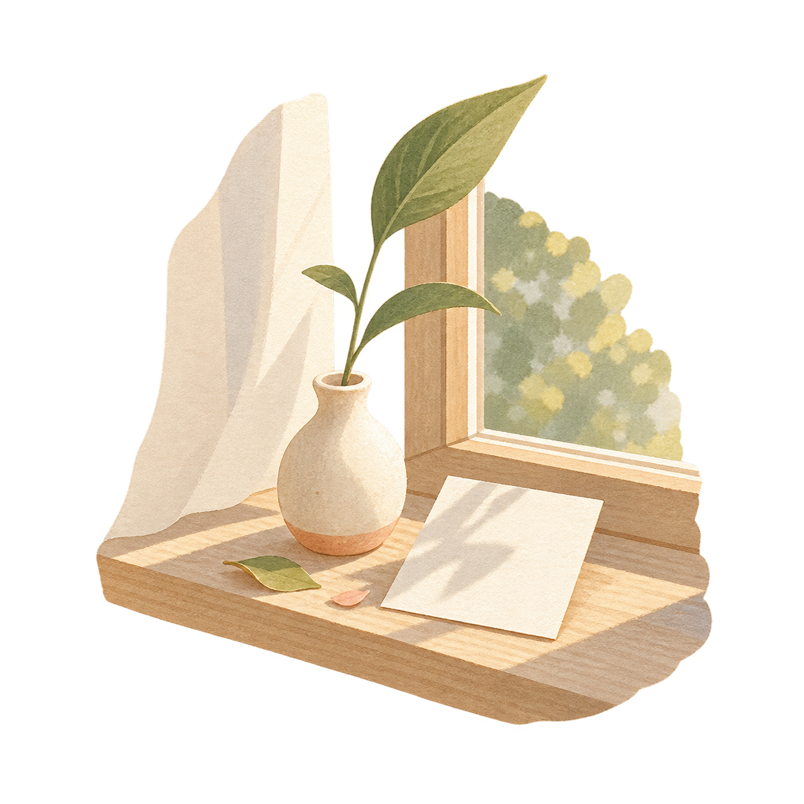

<!doctype html>
<html lang="ko"><head><meta charset="utf-8"><meta name="viewport" content="width=device-width,initial-scale=1,viewport-fit=cover,user-scalable=no">
<title>Hello, Today</title><style>
:root{--bg:#f8f5ed;--paper:#fffdf8;--ink:#292b27;--muted:#686b63;--olive:#66705b;--olive2:#e8eadf;--line:#e5e1d7;--warm:#b86f52;--shadow:0 10px 28px rgba(54,52,43,.07)}
*{box-sizing:border-box;-webkit-tap-highlight-color:transparent}html,body{margin:0;height:100%;background:var(--bg);color:var(--ink);font-family:-apple-system,BlinkMacSystemFont,"Noto Sans KR","Segoe UI",sans-serif}button,input,select,textarea{font:inherit}button{cursor:pointer}.app{height:100%;max-width:560px;margin:auto;display:flex;flex-direction:column;background:var(--bg)}
.top{height:62px;display:flex;align-items:center;padding:8px 22px 0;flex:none}.brand{font-family:Georgia,serif;font-size:18px;letter-spacing:.2px}.top .date{margin-left:auto;color:var(--muted);font-size:12px}.main{flex:1;overflow:auto;padding:16px 20px 110px}.eyebrow{color:var(--olive);font-size:12px;font-weight:700;letter-spacing:.08em;margin:8px 0 10px}.hero{font-family:Georgia,"Noto Serif KR",serif;font-size:34px;line-height:1.25;letter-spacing:-.8px;margin:0 0 12px}.sub{font-size:14px;color:var(--muted);line-height:1.65;margin:0}.avatar{width:72px;height:72px;border-radius:50%;display:grid;place-items:center;background:var(--olive2);color:var(--olive);font-family:Georgia,serif;font-size:28px;margin:28px 0 18px}.card{background:var(--paper);border:1px solid rgba(229,225,215,.8);border-radius:22px;padding:20px;margin:22px 0 16px;box-shadow:var(--shadow)}.label{font-size:12px;color:var(--olive);font-weight:700}.quote{font-family:Georgia,"Noto Serif KR",serif;font-size:19px;line-height:1.6;margin:10px 0 0}.small{font-size:12px;color:var(--muted);line-height:1.55}.btn{border:0;border-radius:16px;width:100%;min-height:54px;padding:14px 18px;background:var(--olive);color:white;font-weight:700}.btn.secondary{background:var(--olive2);color:var(--olive)}.btn.ghost{background:transparent;color:var(--muted)}.btn.danger{background:#f6e9e4;color:#944c35}.row{display:flex;gap:10px}.row>*{flex:1}.nav{position:fixed;left:50%;bottom:0;transform:translateX(-50%);width:min(560px,100%);height:82px;padding:8px 18px max(8px,env(safe-area-inset-bottom));display:flex;background:rgba(248,245,237,.96);border-top:1px solid var(--line);backdrop-filter:blur(16px)}.nav button{border:0;background:transparent;color:#8c8d84;flex:1;font-size:11px}.nav b{display:block;font-size:20px;font-weight:400;margin-bottom:3px}.nav .active{color:var(--olive);font-weight:700}.person{display:flex;align-items:center;gap:14px;background:var(--paper);border:1px solid var(--line);border-radius:18px;padding:15px;margin:10px 0;transition:transform .08s ease,filter .08s ease}.miniavatar{width:44px;height:44px;display:grid;place-items:center;border-radius:50%;background:var(--olive2);color:var(--olive);font-family:Georgia,serif;font-size:18px;flex:none}.person .info{flex:1}.person .name{font-weight:700}.person .meta{font-size:12px;color:var(--muted);margin-top:4px}.iconbtn{border:0;background:transparent;color:var(--muted);font-size:20px;padding:9px}.empty{padding:50px 0 20px}.log{padding:16px 2px;border-bottom:1px solid var(--line)}.log .when{font-size:12px;color:var(--muted);margin-top:5px}.log .memo{font-family:Georgia,"Noto Serif KR",serif;margin-top:9px;color:#50534b}.pill{display:inline-block;padding:6px 10px;border-radius:99px;background:var(--olive2);color:var(--olive);font-size:11px;font-weight:700;margin:4px 4px 0 0}
.overlay{position:fixed;inset:0;background:rgba(35,36,31,.30);display:flex;align-items:flex-end;justify-content:center;z-index:10}.sheet{background:var(--paper);width:min(560px,100%);max-height:92%;overflow:auto;border-radius:26px 26px 0 0;padding:24px 20px calc(22px + env(safe-area-inset-bottom));box-shadow:0 -16px 50px rgba(40,38,32,.14)}.sheet h2{font-family:Georgia,"Noto Serif KR",serif;font-size:25px;margin:0 0 8px}.field{margin:16px 0}.field label{display:block;font-size:12px;font-weight:700;color:var(--muted);margin:0 0 7px}.field input,.field select,.field textarea{width:100%;border:1px solid var(--line);border-radius:14px;background:white;padding:14px;color:var(--ink);outline:none}.field textarea{min-height:88px;resize:none}.check{display:flex;align-items:center;gap:10px;margin:15px 0;font-size:14px}.check input{width:18px;height:18px}.sheet .actions{display:flex;gap:10px;margin-top:20px}.sheet .actions button{flex:1}.toast{position:fixed;left:50%;bottom:100px;transform:translateX(-50%);background:#33362f;color:#fff;padding:12px 18px;border-radius:99px;font-size:13px;z-index:30;white-space:nowrap;box-shadow:var(--shadow)}.toastUndo{display:flex;align-items:center;gap:12px}.toastUndo button{border:0;background:transparent;color:#fff;font-weight:700;text-decoration:underline;padding:0;flex:none}.settingsRow{display:flex;align-items:center;padding:17px 0;border-bottom:1px solid var(--line)}.settingsRow div{flex:1}.settingsRow b{display:block;font-size:14px}.settingsRow span{font-size:12px;color:var(--muted)}.settingsRow button{border:0;background:var(--olive2);color:var(--olive);border-radius:12px;padding:9px 12px;font-size:12px;font-weight:700}@media(max-height:650px){.top{height:50px}.main{padding-top:8px}.hero{font-size:29px}.avatar{margin-top:17px;width:62px;height:62px}.card{margin-top:14px;padding:16px}.nav{height:72px}}
/* compact phone layout + tactile controls */
html[data-theme="sage"]{--bg:#edf2ea;--paper:#fbfdf9;--ink:#283029;--muted:#626b63;--olive:#617663;--olive2:#dfe9dd;--line:#d9e2d7;--warm:#718b74}
html[data-theme="lilac"]{--bg:#f3eff7;--paper:#fdfbff;--ink:#302c34;--muted:#6b6570;--olive:#756783;--olive2:#e8e0ef;--line:#e1d9e7;--warm:#97748b}
html[data-theme="peach"]{--bg:#faeee8;--paper:#fffaf6;--ink:#332c29;--muted:#72645f;--olive:#966b59;--olive2:#f1ddd3;--line:#ead8cf;--warm:#b56851}
html[data-theme="sky"]{--bg:#e8f2f7;--paper:#fbfdfe;--ink:#253138;--muted:#62727a;--olive:#4f7f9e;--olive2:#dcebf1;--line:#d3e3ea;--warm:#7f9db5}
html[data-theme="meadow"]{--bg:#eef3df;--paper:#fbfdf6;--ink:#2e331f;--muted:#6b7259;--olive:#7c9a3f;--olive2:#e6edd0;--line:#dde6c8;--warm:#8ba648}
.app{position:relative;isolation:isolate;overflow:hidden}.top,.main,.nav{z-index:1}.app:before,.app:after{content:"";position:fixed;pointer-events:none;z-index:0;opacity:.7}
html[data-theme="cream"] .app:before{width:150px;height:150px;border-radius:50%;right:-70px;top:90px;background:radial-gradient(circle,rgba(226,207,164,.28),transparent 70%)}
html[data-theme="cream"] .card{border-radius:20px;box-shadow:0 9px 26px rgba(91,78,48,.07)}
html[data-theme="sage"] .app:before{width:145px;height:90px;right:-55px;top:100px;border-radius:80% 20% 70% 30%;background:rgba(137,164,133,.16);transform:rotate(-25deg)}
html[data-theme="sage"] .app:after{width:90px;height:145px;left:-50px;bottom:100px;border-radius:30% 70% 25% 75%;background:rgba(137,164,133,.11);transform:rotate(25deg)}
html[data-theme="sage"] .card{border-radius:10px 24px 10px 24px;box-shadow:0 9px 25px rgba(67,91,69,.08)}html[data-theme="sage"] .avatar{border-radius:58% 42% 54% 46%}html[data-theme="sage"] .btn{border-radius:18px}
html[data-theme="lilac"] .app:before{width:190px;height:190px;border-radius:50%;right:-95px;top:55px;background:radial-gradient(circle,rgba(160,133,180,.20),transparent 68%);filter:blur(2px)}
html[data-theme="lilac"] .app:after{width:120px;height:120px;border-radius:50%;left:-70px;bottom:95px;background:radial-gradient(circle,rgba(195,169,211,.18),transparent 70%)}
html[data-theme="lilac"] .card{border-radius:26px;border-color:rgba(182,162,194,.32);box-shadow:0 12px 30px rgba(91,70,104,.09)}html[data-theme="lilac"] .avatar{border-radius:22px;transform:rotate(-3deg)}html[data-theme="lilac"] .btn{border-radius:12px}
html[data-theme="peach"] .app:before{width:170px;height:170px;border-radius:50%;right:-86px;top:78px;background:rgba(236,177,145,.16);box-shadow:-38px 48px 0 -25px rgba(236,177,145,.11)}
html[data-theme="peach"] .app:after{width:12px;height:12px;border-radius:50%;left:25px;bottom:130px;background:rgba(181,104,81,.18);box-shadow:24px 18px 0 rgba(181,104,81,.10),-9px 38px 0 rgba(181,104,81,.08)}
html[data-theme="peach"] .card{border-radius:26px 12px 26px 12px;box-shadow:0 10px 26px rgba(133,78,58,.09)}html[data-theme="peach"] .avatar{border-radius:50% 50% 42% 58%}html[data-theme="peach"] .btn{border-radius:24px}
html,body,button,input,select,textarea{font-family:Roboto,"Noto Sans KR","Apple SD Gothic Neo",sans-serif}
.brand,.hero,.quote,.log .memo{font-family:Roboto,"Noto Sans KR","Apple SD Gothic Neo",sans-serif;letter-spacing:-.035em}.brand{font-weight:700}.hero{font-weight:650}
button{touch-action:manipulation;transition:transform .08s ease,box-shadow .08s ease,filter .08s ease}
button:active,.is-pressed{transform:scale(.955);filter:brightness(.92);transition:none}
.top{height:50px;padding:5px 18px 0}.brand{font-size:16px}.top .date{font-size:11px}
.main{padding:10px 18px 86px}.eyebrow{font-size:11px;margin:6px 0 8px}.hero{font-size:29px;line-height:1.27;margin-bottom:10px}.sub{font-size:13px;line-height:1.58}
.avatar{width:60px;height:60px;font-size:24px;margin:18px 0 14px}.card{border-radius:18px;padding:16px;margin:15px 0 13px}.label{font-size:11px}.quote{font-size:17px;line-height:1.5;margin-top:8px}.small{font-size:11px}
.btn{min-height:47px;padding:11px 16px;border-radius:14px;border:1px solid rgba(63,70,55,.12);font-size:14px;box-shadow:0 4px 10px rgba(73,82,63,.16),inset 0 1px rgba(255,255,255,.16)}
.btn:active{box-shadow:0 1px 2px rgba(73,82,63,.12),inset 0 2px 4px rgba(32,37,28,.15)}.btn.secondary{box-shadow:0 3px 8px rgba(73,82,63,.08)}.btn.ghost{box-shadow:none}
.nav{height:66px;padding:5px 14px 6px}.nav button{font-size:10px;border-radius:12px}.nav button:active{background:var(--olive2)}.nav b{font-size:17px;margin-bottom:1px}
.nav svg{display:block;width:20px;height:20px;margin:0 auto 2px;fill:none;stroke:currentColor;stroke-width:1.8;stroke-linecap:round;stroke-linejoin:round}.nav .active svg{stroke-width:2.2}
.person{gap:12px;border-radius:16px;padding:12px;margin:8px 0}.miniavatar{width:39px;height:39px;font-size:16px}.person .name{font-size:14px}.person .meta{font-size:11px}.iconbtn{font-size:18px;padding:8px;border-radius:10px}.iconbtn:active{background:var(--olive2)}.empty{padding:32px 0 16px}
.sheet{max-height:88%;border-radius:22px 22px 0 0;padding:20px 18px 18px}.sheet h2{font-size:22px}.field{margin:13px 0}.field label{font-size:11px;margin-bottom:6px}.field input,.field select,.field textarea{border-radius:12px;padding:12px;font-size:14px}.field input:focus,.field select:focus,.field textarea:focus{border-color:var(--olive);box-shadow:0 0 0 3px rgba(102,112,91,.10)}.field textarea{min-height:78px}.helper{font-size:10px;color:var(--muted);line-height:1.45;margin:6px 2px 0}.sheet .actions{gap:8px;margin-top:17px}.toast{bottom:78px;padding:10px 15px;font-size:12px}
.themeGrid{display:grid;grid-template-columns:repeat(3,1fr);gap:8px;margin:14px 0 8px}.themeBtn{border:1px solid var(--line);background:var(--paper);border-radius:14px;padding:10px 4px 8px;color:var(--muted);font-size:10px}.themeBtn.active{border:2px solid var(--olive);color:var(--olive);font-weight:700}.swatch{display:block;width:27px;height:27px;border-radius:50%;margin:0 auto 6px;box-shadow:inset 0 0 0 1px rgba(40,40,35,.08)}
.settingsRow button.danger{background:#f6e9e4;color:#944c35}
.main{position:relative}.themePictogram{position:absolute;right:2px;top:2px;width:42px;height:42px;color:var(--warm);opacity:.46;pointer-events:none}.themePictogram svg,.themeSymbol svg{width:100%;height:100%;fill:none;stroke:currentColor;stroke-width:1.7;stroke-linecap:round;stroke-linejoin:round}.themeSymbol{display:block;width:29px;height:29px;margin:0 auto 6px;color:var(--olive)}.themeBtn .swatch{display:none}
.tutorial{position:fixed;inset:0;z-index:50;background:var(--bg);display:flex;flex-direction:column;padding:18px}.tutorialTop{height:42px;display:flex;align-items:center}.tutorialTop .brand{color:var(--ink)}.tutorialSkip{margin-left:auto;border:0;background:transparent;color:var(--muted);padding:9px 5px}.tutorialBody{flex:1;display:flex;flex-direction:column;justify-content:center;align-items:center;text-align:center;padding:10px 14px}.tutorialArt{width:160px;height:160px;display:grid;place-items:center;margin-bottom:24px;position:relative}.tutorialArt img{width:100%;height:100%;object-fit:contain;filter:drop-shadow(0 10px 16px rgba(57,51,39,.08))}.tutorial h1{font-size:26px;line-height:1.35;letter-spacing:-.045em;margin:0 0 12px}.tutorial p{font-size:13px;line-height:1.7;color:var(--muted);margin:0;max-width:290px}.tutorialDots{display:flex;justify-content:center;gap:7px;margin:4px 0 20px}.tutorialDots i{width:6px;height:6px;border-radius:50%;background:var(--line)}.tutorialDots i.on{width:20px;background:var(--olive)}.tutorialActions{display:flex;gap:8px}.tutorialActions .btn{flex:1}
.emptyIllustration{display:block;width:170px;height:150px;object-fit:contain;margin:12px auto 14px;filter:drop-shadow(0 10px 18px rgba(57,51,39,.07))}.emptyLogArt{display:block;width:150px;height:110px;object-fit:contain;margin:14px auto 8px;filter:drop-shadow(0 8px 14px rgba(57,51,39,.06))}html[data-theme="lilac"] .emptyIllustration,html[data-theme="lilac"] .tutorialArt img{filter:drop-shadow(0 12px 19px rgba(91,70,104,.10)) hue-rotate(8deg)}html[data-theme="peach"] .emptyIllustration,html[data-theme="peach"] .tutorialArt img{filter:drop-shadow(0 12px 19px rgba(133,78,58,.10)) saturate(1.05)}
/* theme identities: typography, surfaces, navigation, decoration and motion */
html[data-theme="cream"] .brand,html[data-theme="cream"] .hero,html[data-theme="cream"] .quote{font-family:Georgia,"Noto Serif KR",serif;letter-spacing:-.02em}
html[data-theme="cream"] .top{border-bottom:1px solid rgba(187,174,143,.20)}
html[data-theme="cream"] .card,html[data-theme="cream"] .person{background:linear-gradient(145deg,#fffefa,#fbf6e9);border-color:rgba(186,170,132,.30)}
html[data-theme="cream"] .card{box-shadow:0 8px 0 -5px rgba(185,163,112,.18),0 13px 30px rgba(91,78,48,.07)}
html[data-theme="cream"] .avatar,html[data-theme="cream"] .miniavatar{border:1px solid rgba(159,144,105,.25);box-shadow:inset 0 0 0 4px rgba(255,255,255,.38)}
html[data-theme="cream"] .nav{background:rgba(255,252,244,.96);border-top-color:rgba(186,170,132,.28)}
html[data-theme="cream"] .nav .active{background:#eee9da;border-radius:14px}
html[data-theme="cream"] .btn{box-shadow:0 4px 0 #4f5947,0 8px 16px rgba(73,82,63,.12)}
html[data-theme="cream"] .btn:active,html[data-theme="cream"] .btn.is-pressed{transform:translateY(3px) scale(.985);box-shadow:0 1px 0 #4f5947}
html[data-theme="cream"] .sheet{border-top:1px solid rgba(186,170,132,.38)}

html[data-theme="sage"] .brand,html[data-theme="sage"] .hero{letter-spacing:-.045em}
html[data-theme="sage"] .top{background:linear-gradient(180deg,rgba(237,242,234,.95),rgba(237,242,234,0))}
html[data-theme="sage"] .card,html[data-theme="sage"] .person{background:rgba(251,253,249,.88);border-color:rgba(112,142,113,.23)}
html[data-theme="sage"] .card{border-radius:9px 27px 9px 27px;padding-left:19px;border-left:4px solid rgba(113,139,116,.34)}
html[data-theme="sage"] .person{border-radius:8px 20px 8px 20px}
html[data-theme="sage"] .avatar,html[data-theme="sage"] .miniavatar{border-radius:62% 38% 57% 43%/45% 55% 45% 55%;transform:rotate(-3deg);box-shadow:0 6px 15px rgba(67,91,69,.12)}
html[data-theme="sage"] .nav{bottom:7px;width:calc(min(560px,100%) - 20px);height:58px;border:1px solid rgba(100,126,102,.24);border-radius:22px;background:rgba(247,251,245,.94);box-shadow:0 8px 25px rgba(57,78,59,.13);padding:5px 9px}
html[data-theme="sage"] .nav .active{background:var(--olive2);border-radius:17px}
html[data-theme="sage"] .btn{border-radius:19px 10px 19px 10px;box-shadow:none;border:1px solid rgba(60,91,64,.16)}
html[data-theme="sage"] .btn:active,html[data-theme="sage"] .btn.is-pressed{transform:scale(.975) rotate(-.4deg);filter:saturate(.88)}
html[data-theme="sage"] .sheet{border-radius:30px 12px 0 0}
html[data-theme="sage"] .field input,html[data-theme="sage"] .field select,html[data-theme="sage"] .field textarea{border-radius:8px 16px 8px 16px;background:#fbfdf9}

html[data-theme="lilac"] .brand{letter-spacing:.04em;text-transform:none}
html[data-theme="lilac"] .hero,html[data-theme="lilac"] .quote{font-weight:600;letter-spacing:-.025em}
html[data-theme="lilac"] .top{background:rgba(253,251,255,.50);backdrop-filter:blur(10px)}
html[data-theme="lilac"] .card,html[data-theme="lilac"] .person{background:rgba(255,253,255,.76);border-color:rgba(154,127,174,.27);box-shadow:0 15px 35px rgba(91,70,104,.10),inset 0 1px rgba(255,255,255,.80)}
html[data-theme="lilac"] .card{border-radius:28px}
html[data-theme="lilac"] .avatar,html[data-theme="lilac"] .miniavatar{border-radius:18px;transform:rotate(-4deg);outline:4px solid rgba(232,224,239,.70);outline-offset:2px}
html[data-theme="lilac"] .nav{bottom:8px;width:calc(min(560px,100%) - 24px);height:59px;border:1px solid rgba(139,113,158,.22);border-radius:18px;background:rgba(253,251,255,.88);box-shadow:0 10px 32px rgba(76,57,89,.15);padding:5px 8px}
html[data-theme="lilac"] .nav .active{background:rgba(232,224,239,.82);border-radius:12px;box-shadow:inset 0 0 0 1px rgba(117,103,131,.08)}
html[data-theme="lilac"] .btn{border-radius:12px;background:linear-gradient(135deg,#756783,#897793);box-shadow:0 7px 18px rgba(91,70,104,.19)}
html[data-theme="lilac"] .btn.secondary{background:rgba(232,224,239,.86);box-shadow:0 4px 12px rgba(91,70,104,.08)}
html[data-theme="lilac"] .btn:active,html[data-theme="lilac"] .btn.is-pressed{transform:scale(.965);box-shadow:0 2px 5px rgba(91,70,104,.12)}
html[data-theme="lilac"] .sheet{border-radius:30px 30px 0 0;background:rgba(253,251,255,.98)}
html[data-theme="lilac"] .themeBtn.active{box-shadow:0 0 0 3px rgba(117,103,131,.10)}

html[data-theme="peach"] .brand,html[data-theme="peach"] .hero{font-weight:750;letter-spacing:-.05em}
html[data-theme="peach"] .eyebrow{color:#a25f49}
html[data-theme="peach"] .card,html[data-theme="peach"] .person{background:#fffaf6;border-color:rgba(185,105,78,.22)}
html[data-theme="peach"] .card{border-radius:28px 14px 28px 14px;border-bottom-width:3px;box-shadow:0 9px 22px rgba(133,78,58,.11)}
html[data-theme="peach"] .person{border-radius:22px 10px 22px 10px}
html[data-theme="peach"] .avatar,html[data-theme="peach"] .miniavatar{border-radius:50%;border:3px solid rgba(255,250,246,.85);box-shadow:0 0 0 2px rgba(181,104,81,.18),0 8px 18px rgba(133,78,58,.14)}
html[data-theme="peach"] .nav{background:rgba(255,248,243,.97);border-top:2px solid rgba(185,105,78,.16)}
html[data-theme="peach"] .nav .active{color:#a75840;background:#f5ddd2;border-radius:20px}
html[data-theme="peach"] .btn{border-radius:24px;background:#9e6653;box-shadow:0 5px 0 #7f4f3f,0 9px 18px rgba(133,78,58,.14)}
html[data-theme="peach"] .btn.secondary{background:#f1ddd3;color:#8c5947;box-shadow:0 4px 0 #e2c3b5}
html[data-theme="peach"] .btn:active,html[data-theme="peach"] .btn.is-pressed{transform:translateY(3px) scale(.985);box-shadow:0 1px 0 #7f4f3f}
html[data-theme="peach"] .sheet{border-radius:34px 34px 0 0;border-top:3px solid rgba(185,105,78,.13)}
html[data-theme="peach"] .field input,html[data-theme="peach"] .field select,html[data-theme="peach"] .field textarea{border-radius:18px;background:#fffdfb}

html[data-theme="sage"] .emptyIllustration,html[data-theme="sage"] .tutorialArt img{filter:drop-shadow(0 12px 18px rgba(67,91,69,.10)) saturate(.86) hue-rotate(14deg)}
html[data-theme="cream"] .emptyIllustration,html[data-theme="cream"] .tutorialArt img{filter:drop-shadow(0 9px 14px rgba(91,78,48,.08)) sepia(.08)}
html[data-theme="peach"] .tutorialDots i.on{width:8px;height:8px;box-shadow:0 0 0 4px rgba(181,104,81,.12)}
html[data-theme="lilac"] .tutorialDots i.on{border-radius:3px;transform:rotate(45deg)}
/* readability lock: all themes keep one stable interaction and layout system */
html[data-theme] .brand,html[data-theme] .hero,html[data-theme] .quote,html[data-theme] .log .memo{font-family:Roboto,"Noto Sans KR","Apple SD Gothic Neo",sans-serif;letter-spacing:-.035em}
html[data-theme] .brand{font-weight:700}html[data-theme] .hero{font-weight:650}
html[data-theme] .top{background:transparent;border:0;backdrop-filter:none}
html[data-theme] .card{background:var(--paper);border:1px solid var(--line);border-left-width:1px;border-bottom-width:1px;border-radius:18px;padding:16px;margin:15px 0 13px;box-shadow:0 7px 20px rgba(55,55,48,.07)}
html[data-theme] .person{background:var(--paper);border:1px solid var(--line);border-radius:16px;padding:12px;margin:8px 0;box-shadow:none}
html[data-theme] .avatar,html[data-theme] .miniavatar{border-radius:50%;transform:none;outline:0;border:0;box-shadow:none}
html[data-theme] .nav{position:fixed;left:50%;bottom:0;transform:translateX(-50%);width:min(560px,100%);height:66px;padding:5px 14px 6px;border:0;border-top:1px solid var(--line);border-radius:0;background:var(--bg);box-shadow:none;backdrop-filter:none}
html[data-theme] .nav button{border-radius:12px}html[data-theme] .nav .active{background:var(--olive2);border-radius:12px;box-shadow:none;color:var(--olive)}
html[data-theme] .btn{min-height:47px;padding:11px 16px;border-radius:14px;background:var(--olive);color:#fff;border:1px solid rgba(63,70,55,.12);box-shadow:0 3px 8px rgba(55,62,49,.14)}
html[data-theme] .btn.secondary{background:var(--olive2);color:var(--olive);box-shadow:0 2px 6px rgba(55,62,49,.07)}
html[data-theme] .btn.ghost{background:var(--paper);color:var(--olive);border:1px solid var(--line);box-shadow:0 2px 6px rgba(55,62,49,.06);font-weight:700}
html[data-theme] .row .btn.ghost{min-height:46px}
html[data-theme] .btn:active,html[data-theme] .btn.is-pressed{transform:scale(.97);filter:brightness(.94);box-shadow:0 1px 3px rgba(55,62,49,.10)}
html[data-theme] .sheet{border-radius:22px 22px 0 0;border:0;background:var(--paper);box-shadow:0 -14px 38px rgba(40,38,32,.13)}
html[data-theme] .field input,html[data-theme] .field select,html[data-theme] .field textarea{border-radius:12px;background:#fff}
html[data-theme] .tutorialDots i.on{width:20px;height:6px;border-radius:50%;transform:none;box-shadow:none}
html[data-theme="cream"] .card{border-radius:18px}html[data-theme="sage"] .card{border-radius:16px}html[data-theme="lilac"] .card{border-radius:20px}html[data-theme="peach"] .card{border-radius:18px}
/* a light handmade atmosphere; existing illustrations, surfaces and controls stay intact */
html[data-theme] .app{background-color:var(--bg);background-image:radial-gradient(circle at 18% 16%,rgba(255,255,255,.34) 0 1px,transparent 1.4px),radial-gradient(circle at 76% 63%,rgba(55,64,68,.018) 0 1px,transparent 1.4px);background-size:23px 27px,31px 35px}
html[data-theme] .brand{font-family:"Segoe Print","Comic Sans MS",cursive;letter-spacing:-.02em;text-decoration:none}
html[data-theme] .hero,html[data-theme] .tutorial h1{font-family:ui-rounded,"Arial Rounded MT Bold",Roboto,"Noto Sans KR","Noto Sans JP",sans-serif}
.tutorial{opacity:1}.tutorialStage{flex:1;min-height:0;display:flex;flex-direction:column}.tutorialActions{flex:none}.tutorial>.tutorialTop,.tutorial>.tutorialStage,.tutorial>.tutorialActions{animation:tutorialContentIn .34s ease both}.tutorialStage.is-leaving{animation:tutorialContentOut .22s ease both;pointer-events:none}.tutorial.is-closing{pointer-events:none}.tutorial.is-closing>.tutorialTop,.tutorial.is-closing>.tutorialStage,.tutorial.is-closing>.tutorialActions{animation:tutorialContentOut .22s ease both}
.reminderChoices{display:grid;grid-template-columns:1fr 1fr;gap:8px}.reminderChoice{min-height:76px;border:1px solid var(--line);border-radius:14px;background:var(--paper);color:var(--ink);padding:11px;text-align:left;box-shadow:none}.reminderChoice b,.reminderChoice span{display:block}.reminderChoice b{font-size:13px;margin-bottom:4px}.reminderChoice span{font-size:10px;line-height:1.4;color:var(--muted)}.reminderChoice.active{border:2px solid var(--olive);background:var(--olive2);color:var(--olive)}.dateTools{display:flex;gap:8px;align-items:center}.dateTools input{flex:1}.dateTools button{border:0;border-radius:11px;background:var(--olive2);color:var(--olive);padding:11px 12px;font-size:11px;font-weight:700;white-space:nowrap}
.settingsRow{height:68px;min-height:68px;gap:12px}.settingsRow>div:first-child{min-width:0}.settingsRow b{line-height:1.25;white-space:nowrap;overflow:hidden;text-overflow:ellipsis}.settingsRow span{display:block;line-height:1.35;margin-top:3px;white-space:nowrap;overflow:hidden;text-overflow:ellipsis}.settingsRow>button{width:68px;min-width:68px;padding-left:4px;padding-right:4px;white-space:nowrap}.languageRow>div:last-child{width:116px!important;min-width:116px;flex:none!important}.languageRow button{width:34px;padding-left:0;padding-right:0}.themeBtn{min-height:62px}.reminderChoice b,.reminderChoice span{min-height:16px}.sheet>.sub{height:42px;min-height:42px;overflow:hidden}.tutorial p{min-height:44px}.empty>.sub{min-height:42px}
@keyframes tutorialContentIn{from{opacity:0}to{opacity:1}}@keyframes tutorialContentOut{from{opacity:1}to{opacity:0}}
@media(max-height:650px){.hero{font-size:26px}.avatar{margin-top:12px;width:54px;height:54px}.card{margin-top:11px;padding:14px}.nav{height:60px}.main{padding-bottom:76px}}
</style></head><body><div id="app" class="app"></div><script>
const KEY='hello.today.v03';
const legacySeeds=['요즘 가장 즐거웠던 일은 무엇인가요?','최근에 맛있게 드신 음식이 있나요?','요즘 잠은 편하게 주무시나요?','이번 주에 기다려지는 일이 있나요?','문득 생각난 옛날 이야기가 있나요?'];
const seedTexts={ko:['요즘 뭐가 제일 재미있었어요?','최근에 맛있는 거 드셨어요?','요즘 잠은 잘 주무세요?','이번 주에 기다려지는 일이 있어요?','문득 생각난 옛날 이야기가 있어요?'],ja:['最近、何がいちばん楽しかったですか？','最近、おいしいものを食べましたか？','最近、よく眠れていますか？','今週、楽しみにしていることはありますか？','ふと思い出した昔の話はありますか？'],en:['What have you enjoyed lately?','Had anything good to eat lately?','Have you been sleeping well?','Anything you’re looking forward to this week?','Any old stories come to mind lately?']};
const seeds=seedTexts.ko;
const deviceLanguage=(()=>{let l=(navigator.language||'en').toLowerCase();return l.startsWith('ko')?'ko':l.startsWith('ja')?'ja':'en'})();
const now=()=>Date.now(), day=86400000, RANDOM_MIN=14, RANDOM_MAX=28, FREE_PEOPLE_LIMIT=2;
let state=load(), tab='today', overlay=null, toastTimer, tutorialStep=0, tutorialAnimating=false, focusedPersonId=null, premiumPrice='', peopleQuery='', pendingUndo=null, tutorialSwipeStartX=null;
state.settings=Object.assign({quietStart:'21:00',quietEnd:'09:00',notificationTime:'10:00',theme:'cream',tutorialDone:false,language:deviceLanguage,premium:false},state.settings||{});
try{state.settings.premium=state.settings.premium||!!HelloNative.isPremium()}catch(e){}
function isPremium(){return !!state.settings.premium}
function onPremiumStatus(unlocked){let was=state.settings.premium;state.settings.premium=!!unlocked;save();if(!was&&state.settings.premium){if(overlay&&overlay.type==='premium')overlay=null;toast(l('광고가 제거됐어요','広告が削除されました','Ads removed'))}render()}
window.onPremiumStatus=onPremiumStatus;
function onPremiumPrice(text){premiumPrice=text||'';if(overlay&&overlay.type==='premium')render()}
window.onPremiumPrice=onPremiumPrice;
function onPurchaseFailed(){toast(l('구매를 완료하지 못했어요','購入を完了できませんでした','Could not complete the purchase'))}
window.onPurchaseFailed=onPurchaseFailed;
function buyPremium(){try{HelloNative.purchasePremium()}catch(e){onPurchaseFailed()}}
function restorePremium(){try{HelloNative.restorePurchases();toast(l('구매 내역을 확인하고 있어요','購入履歴を確認しています','Checking your purchase history'))}catch(e){toast(l('복원할 수 없어요','復元できません','Could not restore'))}}
function premiumBuyLabel(){return premiumPrice?l(`${premiumPrice}에 광고 제거`,`${premiumPrice}で広告を削除`,`Remove ads for ${premiumPrice}`):l('광고 제거하기','広告を削除','Remove ads')}
state.people.forEach(normalizePerson);
function load(){try{return JSON.parse(localStorage.getItem(KEY))||fresh()}catch(e){return fresh()}}
function fresh(){return{people:[],logs:[],settings:{quietStart:'21:00',quietEnd:'09:00',notificationTime:'10:00',theme:'cream',tutorialDone:false,language:deviceLanguage}}}
function save(){localStorage.setItem(KEY,JSON.stringify(state));autoBackup()}
function backupPayload(){return{format:'hello-today-backup',version:2,exportedAt:new Date().toISOString(),data:state}}
function autoBackup(){try{HelloNative.silentBackup(JSON.stringify(backupPayload()))}catch(e){}}
function esc(s){return String(s??'').replace(/[&<>"']/g,c=>({'&':'&amp;','<':'&lt;','>':'&gt;','"':'&quot;',"'":'&#39;'}[c]))}
function locale(){return state.settings.language==='ko'?'ko-KR':state.settings.language==='ja'?'ja-JP':'en-US'}
function fmt(ts){return new Intl.DateTimeFormat(locale(),{month:'long',day:'numeric'}).format(new Date(ts))}
function fmtTime(ts){return new Intl.DateTimeFormat(locale(),{hour:'numeric',minute:'2-digit'}).format(new Date(ts))}
function dateInputValue(ts){let d=new Date(ts),m=String(d.getMonth()+1).padStart(2,'0'),dayOfMonth=String(d.getDate()).padStart(2,'0');return `${d.getFullYear()}-${m}-${dayOfMonth}`}
function dateValueAtNotification(value){let parts=value.split('-').map(Number);if(parts.length!==3||parts.some(Number.isNaN))return 0;return atNotificationTime(new Date(parts[0],parts[1]-1,parts[2]).getTime())}
function daysAgo(ts){return Math.max(0,Math.floor((now()-ts)/day))}
function quietAdjusted(ts){let d=new Date(ts),[sh,sm]=state.settings.quietStart.split(':').map(Number),[eh,em]=state.settings.quietEnd.split(':').map(Number),mins=d.getHours()*60+d.getMinutes(),start=sh*60+sm,end=eh*60+em,inQuiet=start>end?(mins>=start||mins<end):(mins>=start&&mins<end);if(inQuiet){d.setHours(eh,em,0,0);if(start>end&&mins>=start)d.setDate(d.getDate()+1)}return d.getTime()}
function notifyParts(){return state.settings.notificationTime.split(':').map(Number)}
function atNotificationTime(ts){let d=new Date(ts),[h,m]=notifyParts();d.setHours(h,m,0,0);return quietAdjusted(d.getTime())}
function normalizePerson(p){if(!p.reminderMode)p.reminderMode='fixed';p.interval=Number(p.interval)||21;p.minDays=Number(p.minDays)||RANDOM_MIN;p.maxDays=Number(p.maxDays)||RANDOM_MAX;return p}
function nextIntervalDays(p){normalizePerson(p);if(p.reminderMode!=='random')return p.interval;let min=Math.min(p.minDays,p.maxDays),max=Math.max(p.minDays,p.maxDays);return min+Math.floor(Math.random()*(max-min+1))}
function schedule(p,from=now()){p.nextAt=atNotificationTime(from+nextIntervalDays(p)*day);nativeSchedule(p)}
function nativeSchedule(p){normalizePerson(p);let d=new Date(p.nextAt),h=d.getHours(),m=d.getMinutes();try{HelloNative.schedule(p.id,p.name,p.nextAt,p.interval,h,m,p.reminderMode,p.minDays,p.maxDays)}catch(e){}}
function cancelNative(id){try{HelloNative.cancel(id)}catch(e){}}
function duePeople(){return [...state.people].sort((a,b)=>(a.nextAt||0)-(b.nextAt||0))}
function icon(n){let p={today:'<path d="M4 11.5 12 4l8 7.5"/><path d="M6.5 10v9h11v-9"/><path d="M10 19v-5h4v5"/>',people:'<circle cx="12" cy="8" r="3"/><path d="M6.5 19c.5-4 2.3-6 5.5-6s5 2 5.5 6"/><path d="M5.5 9.5a2.5 2.5 0 0 0-1 4.8"/><path d="M18.5 9.5a2.5 2.5 0 0 1 1 4.8"/>',logs:'<path d="M7 3.5h10a2 2 0 0 1 2 2v15H5v-15a2 2 0 0 1 2-2Z"/><path d="M8.5 8h7M8.5 12h7M8.5 16h4"/>',settings:'<circle cx="12" cy="12" r="3"/><path d="M12 3v2M12 19v2M3 12h2M19 12h2M5.6 5.6 7 7M17 17l1.4 1.4M18.4 5.6 17 7M7 17l-1.4 1.4"/>'}[n];return `<svg viewBox="0 0 24 24" aria-hidden="true">${p}</svg>`}
function render(){document.documentElement.lang=state.settings.language;document.documentElement.dataset.theme=state.settings.theme;document.getElementById('app').innerHTML=`<header class="top"><div class="brand">Hello, Today</div><div class="date">${new Intl.DateTimeFormat(locale(),{month:'long',day:'numeric',weekday:'short'}).format(new Date())}</div></header><main class="main">${themePictogram()}${tab==='today'?todayView():tab==='people'?peopleView():tab==='logs'?logsView():settingsView()}</main>${navView()}${overlay?overlayView():''}${!state.settings.tutorialDone?tutorialView():''}`;if(tab==='settings')addLanguageControl();localizeDom();syncNativeLanguage();syncNativeTheme()}
function themeSvg(theme){return {cream:'<circle cx="12" cy="12" r="8.5"/><path d="M9.1 10.5 10.5 9 11.9 10.5M14.7 10.5l1.4-1.5 1.4 1.5"/><path d="M10.3 14.5c.9 1.2 1.9 1.8 3 1.8s2.1-.6 3-1.8"/><path d="M7.7 13.6h.01M18.9 13.6h.01"/>',sky:'<path d="M7 17.5h9.5a3.75 3.75 0 0 0 .4-7.48A5 5 0 0 0 7.4 9.2 3.5 3.5 0 0 0 7 17.5Z"/>',meadow:'<path d="M12 20v-9"/><path d="M12 11c0-3.2 2.1-5.3 5.3-5.3-.3 3.2-2.4 5.3-5.3 5.3Z"/><path d="M12 14.3c0-2.8-1.9-4.5-4.6-4.5.3 2.7 2.1 4.5 4.6 4.5Z"/>',sage:'<path d="M5 19c7-1 12-6 14-14-8 1-13 6-14 14Z"/><path d="M7 17c3-4 6-6 10-9M8.5 13.5c-1.5-.2-2.6-.7-3.5-1.5M12.5 10c.2-1.5.7-2.7 1.5-3.7"/>',lilac:'<path d="M15.8 3.5A8.6 8.6 0 1 0 20.5 17 7.2 7.2 0 0 1 15.8 3.5Z"/><path d="m18.5 5 .5 1.4 1.5.5-1.5.5-.5 1.4-.5-1.4-1.5-.5 1.5-.5.5-1.4Z"/>',peach:'<path d="M5 5.5h14a2 2 0 0 1 2 2v7a2 2 0 0 1-2 2h-7l-4.5 3v-3H5a2 2 0 0 1-2-2v-7a2 2 0 0 1 2-2Z"/><path d="M8 11h.01M12 11h.01M16 11h.01"/>'}[theme]}
function themeSymbol(theme){return `<span class="themeSymbol"><svg viewBox="0 0 24 24" aria-hidden="true">${themeSvg(theme)}</svg></span>`}
function themePictogram(){return `<div class="themePictogram"><svg viewBox="0 0 24 24" aria-hidden="true">${themeSvg(state.settings.theme)}</svg></div>`}
const translations={
en:[['오늘','Today'],['사람','People'],['기록','History'],['설정','Settings'],['건너뛰기','Skip'],['이전','Back'],['시작하기','Get started'],['다음','Next'],['하루의 틈에,','A gentle moment,'],['작은 안부','a little hello'],['가끔 생각나는 사람과','A place for people who cross your mind'],['기억하고 싶은 이야기를 담아두는 곳.','and stories you want to remember.'],['사람 등록하기','Add a person'],['무료로 두 명까지 등록할 수 있어요.','You can add up to two people for free.'],['오늘 생각난 사람','On your mind today'],['다음 안부','Next hello'],['마지막 연락은 ','Last contact was '],['일 전이에요',' days ago'],['아직 남겨진 연락 기록이 없어요','No contact history yet'],['오늘, ','How is '],['은 어떻게 지내고 있을까요?',' doing today?'],['다음 알림은 ','Next reminder: '],['이에요.','.'],['지난번에 남긴 메모','Note from last time'],['오늘의 대화 주제','Today’s conversation idea'],['다른 주제 보기','Try another topic'],['연락했어요','I reached out'],['내일 다시','Tomorrow'],['다른 날','Another day'],['연락하고 싶은 사람','People to keep in touch with'],['내 사람들','My people'],['사람 추가','Add person'],['소중한 사람','Someone special'],['아직 등록한 사람이 없어요.','No one added yet.'],['함께 나눈 시간','Time shared'],['안부 기록','Contact history'],['아직 기록이 없어요.','No history yet.'],['앱 꾸미기','Personalize'],['오늘의 분위기','Today’s mood'],['언어','Language'],['알림 시간','Reminder time'],['조용한 시간','Quiet hours'],['알림 설정','Notification settings'],['알림 테스트','Test notification'],['튜토리얼','Tutorial'],['백업 저장','Save backup'],['백업 불러오기','Restore backup'],['모든 데이터 삭제','Delete all data'],['바꾸기','Change'],['확인','Check'],['테스트','Test'],['다시 보기','View again'],['저장','Save'],['불러오기','Restore'],['삭제','Delete'],['취소','Cancel'],['기록하기','Save contact'],['삭제하기','Delete'],['모두 삭제','Delete all']],
ja:[['오늘','今日'],['사람','相手'],['기록','履歴'],['설정','設定'],['건너뛰기','スキップ'],['이전','戻る'],['시작하기','はじめる'],['다음','次へ'],['하루의 틈에,','一日のすき間に、'],['작은 안부','小さな便り'],['가끔 생각나는 사람과','ふと思い出す人と'],['기억하고 싶은 이야기를 담아두는 곳.','覚えておきたい話を残す場所。'],['사람 등록하기','相手を登録'],['무료로 두 명까지 등록할 수 있어요.','無料版では2人まで登録できます。'],['오늘 생각난 사람','今日思い出した人'],['다음 안부','次の便り'],['마지막 연락은 ','最後の連絡から'],['일 전이에요','日前'],['아직 남겨진 연락 기록이 없어요','まだ連絡の記録はありません'],['오늘, ','今日、'],['은 어떻게 지내고 있을까요?','は元気にしているでしょうか？'],['다음 알림은 ','次の通知は'],['이에요.','です。'],['지난번에 남긴 메모','前回のメモ'],['오늘의 대화 주제','今日の話題'],['다른 주제 보기','別の話題を見る'],['연락했어요','連絡しました'],['내일 다시','明日また'],['다른 날','別の日'],['연락하고 싶은 사람','連絡したい人'],['내 사람들','大切な人たち'],['사람 추가','相手を追加'],['소중한 사람','大切な人'],['아직 등록한 사람이 없어요.','まだ登録した人はいません。'],['함께 나눈 시간','一緒に過ごした時間'],['안부 기록','連絡の記録'],['아직 기록이 없어요.','まだ記録はありません。'],['앱 꾸미기','アプリの雰囲気'],['오늘의 분위기','今日のテーマ'],['언어','言語'],['알림 시간','通知時刻'],['조용한 시간','通知しない時間'],['알림 설정','通知設定'],['알림 테스트','通知テスト'],['튜토리얼','チュートリアル'],['백업 저장','バックアップ'],['백업 불러오기','復元'],['모든 데이터 삭제','すべてのデータを削除'],['바꾸기','変更'],['확인','確認'],['테스트','テスト'],['다시 보기','もう一度見る'],['저장','保存'],['불러오기','復元'],['삭제','削除'],['취소','キャンセル'],['기록하기','記録する'],['삭제하기','削除する'],['모두 삭제','すべて削除']]};
translations.en.push(
['생각나는 사람을','Someone on your mind'],['한 명씩 적어보세요','Add them one at a time'],['평소 부르는 이름과\n다시 알려드릴 간격을 정할 수 있어요.','Choose the name you use and how often you would like a reminder.'],['때가 되면','When the time comes'],['조용히 알려드려요','we’ll gently remind you'],['정해둔 날이 가까워지면\n작은 알림으로 이름을 띄워드려요.','As the day approaches, their name appears in a quiet notification.'],['기억하고 싶은','Keep a story'],['이야기를 남겨보세요','you want to remember'],['오늘의 한 줄은 다음 안부에 한 번 나타난 뒤\n새로운 메모로 바뀌어요.','Today’s note appears once at the next reminder, then makes room for a new one.'],['각자에게 어울리는 간격으로','Set a rhythm that suits each person'],['다음 안부를 정할 수 있어요.','and choose when to be reminded again.'],['연락한 날과 기억하고 싶은 한 줄을','Keep the days you reached out and the lines worth remembering'],['차분히 모아볼 수 있어요.','together in one quiet place.'],['첫 안부가 이곳에 차분히 남게 됩니다.','Your first hello will quietly appear here.'],['색과 모양이 함께 달라지는 네 가지 테마.','Four themes that change both color and shape.'],['보통 ','Usually around '],['에 알려드려요',''],['휴대폰 알림 권한 확인','Check notification permission'],['5분 뒤 알림과 버튼을 확인해요','Check the notification and buttons in 5 minutes'],['처음 사용법을 다시 확인할 수 있어요','Review the introduction'],['사람과 기록을 앱 안에 보관해요','Keep people and history inside the app'],['저장된 백업으로 되돌려요','Restore the backup kept by the app'],['이 휴대폰의 기록을 모두 지워요','Erase all records on this phone'],['포근한 크림','Cozy Cream'],['편안한 세이지','Calm Sage'],['차분한 라일락','Quiet Lilac'],['따뜻한 피치','Warm Peach'],['평소 부르는 이름과 알림 간격을 적어주세요.','Enter the name you use and a reminder interval.'],['어떻게 부를까요?','What do you call them?'],['화면과 알림에 표시될 이름이에요.','This name appears in the app and notifications.'],['어떤 사이인가요? (선택)','Relationship (optional)'],['‘아빠’처럼 이름만으로 충분하면 비워도 괜찮아요.','Leave this blank if the name already says enough.'],['알림 간격','Reminder interval'],['약 ','About every '],['일마다',' days'],['다음에 기억하고 싶은 이야기가 있다면 한 줄로 남겨보세요.','Leave one line if there is something you want to remember next time.'],['다음에 기억할 이야기 (선택)','A note for next time (optional)'],['오늘의 느낌 (선택)','How it felt today (optional)'],['선택하지 않음','No selection'],['따뜻했어요','Warm'],['반가웠어요','Glad'],['조금 걱정됐어요','A little worried'],['짧게 안부만 나눴어요','Just a quick hello'],['언제 다시 알려드릴까요?','When should we remind you again?'],['지금 편한 날짜를 골라주세요.','Choose a date that feels right.'],['3일 뒤','In 3 days'],['일주일 뒤','In one week'],['한 달 뒤','In one month'],['이 시간에는 알림을 보내지 않아요.','No notifications during these hours.'],['시작','Start'],['끝','End'],['알림 받을 시간','Reminder time'],['안부가 떠오르기 편한 시간을 골라주세요.','Choose a time when a small reminder feels welcome.'],['조용한 시간과 겹치면 조용한 시간이 끝난 뒤 알려드려요.','If it falls within quiet hours, it will arrive afterward.'],['이 사람을 삭제할까요?','Delete this person?'],['이 사람의 연락 기록과 예정된 알림도 함께 삭제됩니다.','Their contact history and scheduled reminders will also be deleted.'],['모든 데이터를 삭제할까요?','Delete all data?'],['등록한 사람, 메모, 연락 기록과 설정이 모두 삭제됩니다.','People, notes, contact history, and settings will be deleted.'],['백업하지 않은 내용은 되돌릴 수 없어요.','Anything not backed up cannot be recovered.'],['내부 백업도 함께 삭제','Also delete the internal backup'],['마지막 백업','Last backup'],['백업 없음','No backup yet'],['지금 백업','Back up now'],['백업 복원','Restore backup'],['이름을 입력해 주세요','Please enter a name'],['사람과 알림 간격을 저장했어요','Person and reminder interval saved'],['사람과 연락 기록을 삭제했어요','Person and contact history deleted'],['오늘의 안부를 남겼어요','Today’s hello was saved'],['조용한 시간을 저장했어요','Quiet hours saved'],['알림 시간을 선택해 주세요','Choose a reminder time'],['테마를 변경했어요','Theme changed'],['휴대폰 설정에서 앱 알림을 확인해 주세요','Check this app’s notifications in phone settings'],['5분 뒤 테스트 알림을 보낼게요','A test notification will arrive in 5 minutes'],['이 기기에서는 테스트 알림을 예약할 수 없어요','A test notification could not be scheduled'],['백업 내용을 불러왔어요','Backup restored'],['Hello, Today 백업 파일이 아니에요','This is not a Hello, Today backup'],['모든 데이터를 삭제했어요','All data deleted'],['무료판에서는 두 명까지 등록할 수 있어요','The free version supports up to two people'],['예: 아빠, 어머니, 민수','e.g. Dad, Mom, Alex'],['예: 가족, 친구, 동료','e.g. family, friend, coworker'],['예: 다음 주에 병원에 가신대요','e.g. They have a hospital visit next week'],['화면과 알림에 표시될 이름이에요.','This name appears on screen and in notifications.']);
translations.ja.push(
['생각나는 사람을','思い浮かぶ人を'],['한 명씩 적어보세요','一人ずつ登録しましょう'],['평소 부르는 이름과\n다시 알려드릴 간격을 정할 수 있어요.','いつもの呼び名と、次にお知らせする間隔を設定できます。'],['때가 되면','その時が来たら'],['조용히 알려드려요','そっとお知らせします'],['정해둔 날이 가까워지면\n작은 알림으로 이름을 띄워드려요.','決めた日が近づくと、小さな通知に名前を表示します。'],['기억하고 싶은','覚えておきたい'],['이야기를 남겨보세요','話を残しましょう'],['오늘의 한 줄은 다음 안부에 한 번 나타난 뒤\n새로운 메모로 바뀌어요.','今日の一言は次の通知に一度表示され、その後は新しいメモに変わります。'],['각자에게 어울리는 간격으로','相手に合った間隔で'],['다음 안부를 정할 수 있어요.','次の通知を設定できます。'],['연락한 날과 기억하고 싶은 한 줄을','連絡した日と覚えておきたい一言を'],['차분히 모아볼 수 있어요.','静かにまとめて確認できます。'],['첫 안부가 이곳에 차분히 남게 됩니다.','最初の連絡がここに静かに残ります。'],['색과 모양이 함께 달라지는 네 가지 테마.','色と形が一緒に変わる4つのテーマ。'],['보통 ','通常は'],['에 알려드려요','にお知らせします'],['휴대폰 알림 권한 확인','端末の通知権限を確認'],['5분 뒤 알림과 버튼을 확인해요','5分後に通知とボタンを確認'],['처음 사용법을 다시 확인할 수 있어요','最初の使い方をもう一度確認'],['사람과 기록을 앱 안에 보관해요','相手と履歴をアプリ内に保存'],['저장된 백업으로 되돌려요','アプリ内のバックアップから復元'],['이 휴대폰의 기록을 모두 지워요','この端末の記録をすべて削除'],['포근한 크림','やさしいクリーム'],['편안한 세이지','穏やかなセージ'],['차분한 라일락','静かなライラック'],['따뜻한 피치','あたたかなピーチ'],['평소 부르는 이름과 알림 간격을 적어주세요.','いつもの呼び名と通知間隔を入力してください。'],['어떻게 부를까요?','いつも何と呼びますか？'],['화면과 알림에 표시될 이름이에요.','画面と通知に表示される名前です。'],['어떤 사이인가요? (선택)','関係（任意）'],['‘아빠’처럼 이름만으로 충분하면 비워도 괜찮아요.','「お父さん」のように呼び名だけで十分なら空欄でも大丈夫です。'],['알림 간격','通知間隔'],['약 ','約'],['일마다','日ごと'],['다음에 기억하고 싶은 이야기가 있다면 한 줄로 남겨보세요.','次回覚えておきたいことがあれば、一言残してください。'],['다음에 기억할 이야기 (선택)','次回のためのメモ（任意）'],['오늘의 느낌 (선택)','今日の気持ち（任意）'],['선택하지 않음','選択しない'],['따뜻했어요','あたたかかった'],['반가웠어요','うれしかった'],['조금 걱정됐어요','少し心配'],['짧게 안부만 나눴어요','短く近況だけ話した'],['언제 다시 알려드릴까요?','いつもう一度お知らせしますか？'],['지금 편한 날짜를 골라주세요.','都合のよい日を選んでください。'],['3일 뒤','3日後'],['일주일 뒤','1週間後'],['한 달 뒤','1か月後'],['이 시간에는 알림을 보내지 않아요.','この時間帯には通知しません。'],['시작','開始'],['끝','終了'],['알림 받을 시간','通知を受け取る時刻'],['안부가 떠오르기 편한 시간을 골라주세요.','連絡を思い出しやすい時刻を選んでください。'],['조용한 시간과 겹치면 조용한 시간이 끝난 뒤 알려드려요.','通知しない時間と重なる場合は、終了後にお知らせします。'],['이 사람을 삭제할까요?','この相手を削除しますか？'],['이 사람의 연락 기록과 예정된 알림도 함께 삭제됩니다.','連絡履歴と予定済みの通知も削除されます。'],['모든 데이터를 삭제할까요?','すべてのデータを削除しますか？'],['등록한 사람, 메모, 연락 기록과 설정이 모두 삭제됩니다.','登録した相手、メモ、連絡履歴、設定がすべて削除されます。'],['백업하지 않은 내용은 되돌릴 수 없어요.','バックアップしていない内容は元に戻せません。'],['내부 백업도 함께 삭제','アプリ内バックアップも削除'],['마지막 백업','最終バックアップ'],['백업 없음','バックアップはありません'],['지금 백업','今すぐバックアップ'],['백업 복원','バックアップを復元'],['이름을 입력해 주세요','名前を入力してください'],['사람과 알림 간격을 저장했어요','相手と通知間隔を保存しました'],['사람과 연락 기록을 삭제했어요','相手と連絡履歴を削除しました'],['오늘의 안부를 남겼어요','今日の連絡を記録しました'],['조용한 시간을 저장했어요','通知しない時間を保存しました'],['알림 시간을 선택해 주세요','通知時刻を選んでください'],['테마를 변경했어요','テーマを変更しました'],['휴대폰 설정에서 앱 알림을 확인해 주세요','端末の設定でアプリの通知を確認してください'],['5분 뒤 테스트 알림을 보낼게요','5分後にテスト通知を送ります'],['이 기기에서는 테스트 알림을 예약할 수 없어요','この端末ではテスト通知を予約できません'],['백업 내용을 불러왔어요','バックアップを復元しました'],['Hello, Today 백업 파일이 아니에요','Hello, Todayのバックアップではありません'],['모든 데이터를 삭제했어요','すべてのデータを削除しました'],['무료판에서는 두 명까지 등록할 수 있어요','無料版では2人まで登録できます'],['예: 아빠, 어머니, 민수','例：お父さん、お母さん、ミンス'],['예: 가족, 친구, 동료','例：家族、友人、同僚'],['예: 다음 주에 병원에 가신대요','例：来週、病院に行く予定']);
translations.en.push(['복원','Restore'],['요즘 가장 즐거웠던 일은 무엇인가요?','What has brought you joy lately?'],['최근에 맛있게 드신 음식이 있나요?','Have you eaten anything especially good lately?'],['요즘 잠은 편하게 주무시나요?','Have you been sleeping comfortably?'],['이번 주에 기다려지는 일이 있나요?','Is there anything you are looking forward to this week?'],['문득 생각난 옛날 이야기가 있나요?','Is there an old story that came to mind?'],['연락을 기록하면 오늘의 새 메모로 바뀌어요.','After you save the contact, this will be replaced by today’s new note.'],['정보 수정','Edit details']);
translations.ja.push(['복원','復元'],['요즘 가장 즐거웠던 일은 무엇인가요?','最近、いちばん楽しかったことは何ですか？'],['최근에 맛있게 드신 음식이 있나요?','最近、おいしかった食べ物はありますか？'],['요즘 잠은 편하게 주무시나요?','最近、よく眠れていますか？'],['이번 주에 기다려지는 일이 있나요?','今週、楽しみにしていることはありますか？'],['문득 생각난 옛날 이야기가 있나요?','ふと思い出した昔の話はありますか？'],['연락을 기록하면 오늘의 새 메모로 바뀌어요.','連絡を記録すると、今日の新しいメモに変わります。'],['정보 수정','情報を編集']);
function translateText(s){let lang=state.settings.language;if(lang==='ko')return s;for(let p of [...translations[lang]].sort((a,b)=>b[0].length-a[0].length))s=s.split(p[0]).join(p[1]);return s}
function localizeDom(){}
function addLanguageControl(){let first=document.querySelector('.settingsRow');if(!first)return;first.insertAdjacentHTML('beforebegin',`<div class="settingsRow languageRow"><div><b>${l('언어','言語','Language')}</b><span>한국어 · 日本語 · English</span></div><div style="display:flex;gap:4px;flex:none"><button onclick="setLanguage('ko')">KO</button><button onclick="setLanguage('ja')">JP</button><button onclick="setLanguage('en')">EN</button></div></div>`)}
function setLanguage(lang){state.settings.language=lang;save();render();toast(l('언어를 바꿨어요','言語を変更しました','Language changed'))}
function syncNativeLanguage(){try{HelloNative.setLanguage(state.settings.language)}catch(e){}}
function syncNativeTheme(){try{HelloNative.setThemeChrome(state.settings.theme)}catch(e){}}
function l(ko,ja,en){return state.settings.language==='ko'?ko:state.settings.language==='ja'?ja:en}
function localizedSeed(seed){let i=seeds.indexOf(seed);if(i<0)i=legacySeeds.indexOf(seed);return i<0?seed:seedTexts[state.settings.language][i]}
function localizedMood(mood){let map={'따뜻했어요':l('따뜻했어요','あたたかかった','Warm'),'반가웠어요':l('반가웠어요','うれしかった','Glad'),'조금 걱정됐어요':l('조금 걱정됐어요','少し心配','A little worried'),'짧게 안부만 나눴어요':l('짧게 안부만 나눴어요','短く話した','Quick check-in'),'알림에서 연락했어요':l('알림에서 기록','通知から記録','Saved from reminder')};return map[mood]||mood||l('연락함','連絡済み','Contacted')}
function tutorialView(){let all={ko:[['연락하고 싶은 사람을<br>등록해요','평소 부르는 이름을 적어주세요.'],['알림은 알아서<br>보내드려요','연락한 뒤 14~28일 사이에 다시 알려드려요.'],['연락한 날을<br>기록해요','기억해 둘 내용이 있으면 메모로 남겨두세요.']],ja:[['連絡したい相手を<br>登録します','いつもの呼び名を入力してください。'],['通知日は<br>自動で決まります','連絡後14〜28日の間にもう一度お知らせします。'],['連絡した日を<br>記録します','覚えておきたいことはメモに残せます。']],en:[['Add someone<br>you want to contact','Enter the name you usually call them.'],['Reminder dates<br>are picked for you','You’ll be reminded again 14–28 days after contact.'],['Keep track of<br>when you reached out','Save a note if there’s something to remember.']]};let copy=all[state.settings.language][tutorialStep],img=['img/window-note.png','img/quiet-bell.png','img/open-notebook.png'][tutorialStep];return `<section class="tutorial"><div class="tutorialTop"><div class="brand">Hello, Today</div><button class="tutorialSkip" onclick="finishTutorial()">${l('건너뛰기','スキップ','Skip')}</button></div><div class="tutorialStage" ontouchstart="tutorialSwipeStart(event)" ontouchend="tutorialSwipeEnd(event)"><div class="tutorialBody"><div class="tutorialArt"></div><h1>${copy[0]}</h1><p>${copy[1]}</p></div><div class="tutorialDots">${[0,1,2].map(i=>`<i class="${i===tutorialStep?'on':''}"></i>`).join('')}</div></div><div class="tutorialActions" style="min-height:54px">${tutorialStep===2?`<button class="btn" onclick="tutorialNext()">${l('시작하기','始める','Get started')}</button>`:''}</div></section>`}
function navView(){let items=[['today',l('오늘','今日','Today')],['people',l('사람','相手','People')],['logs',l('기록','履歴','History')],['settings',l('설정','設定','Settings')]];return `<nav class="nav">${items.map(x=>`<button aria-label="${x[1]}" class="${tab===x[0]?'active':''}" onclick="go('${x[0]}')">${icon(x[0])}${x[1]}</button>`).join('')}</nav>`}
function todayView(){if(!state.people.length)return `<section class="empty"><div class="eyebrow">Hello, Today</div><h1 class="hero">${l('연락하고 싶은 사람을<br>등록해 보세요','連絡したい相手を<br>登録してみましょう','Add someone<br>you want to contact')}</h1><p class="sub">${l('때가 되면 알림으로 알려드려요.','連絡する時期に通知します。','We’ll remind you when it’s time.')}</p><button class="btn" onclick="openPerson()">${l('사람 등록','相手を登録','Add person')}</button>${isPremium()?'':`<p class="small" style="text-align:center;margin-top:14px">${l(`무료 버전에서는 ${FREE_PEOPLE_LIMIT}명까지 등록할 수 있어요.`,`無料版では${FREE_PEOPLE_LIMIT}人まで登録できます。`,`Add up to ${FREE_PEOPLE_LIMIT} people on the free version.`)}</p>`}</section>`;let p=state.people.find(x=>x.id===focusedPersonId)||duePeople()[0];focusedPersonId=null;let late=now()>=p.nextAt;let last=p.lastAt?l(`마지막 연락 · ${daysAgo(p.lastAt)}일 전`,`前回の連絡 · ${daysAgo(p.lastAt)}日前`,`Last contact · ${daysAgo(p.lastAt)} days ago`):l('아직 연락 기록이 없어요','まだ連絡履歴はありません','No contact history yet');let hero=late?l(`${esc(p.name)}에게<br>연락할까요?`,`${esc(p.name)}さんに<br>連絡しませんか？`,`Reach out to<br>${esc(p.name)}?`):l(`${esc(p.name)}의<br>다음 알림`,`${esc(p.name)}さんの<br>次の通知`,`Next reminder<br>for ${esc(p.name)}`);let next=l(`다음 알림 · ${fmt(p.nextAt)} ${fmtTime(p.nextAt)}`,`次の通知 · ${fmt(p.nextAt)} ${fmtTime(p.nextAt)}`,`Next reminder · ${fmt(p.nextAt)}, ${fmtTime(p.nextAt)}`);return `<div class="eyebrow">${late?l('연락할 때예요','そろそろ連絡しませんか','Time to reach out'):l('다음 알림','次の通知','Next reminder')}</div><div class="avatar">${esc(p.name.slice(0,1))}</div><h1 class="hero">${hero}</h1><p class="sub">${last}<br>${next}</p><article class="card"><div class="label">${p.memo?l('지난 메모','前回のメモ','Last note'):l('무슨 말을 할지 고민될 때','話題に困ったとき','Need something to talk about?')}</div><div class="quote">${p.memo?'“'+esc(p.memo)+'”':esc(localizedSeed(p.topic||seeds[0]))}</div>${p.memo?`<p class="small">${l('새 기록을 남기면 이 메모가 바뀌어요.','新しい記録を残すと、このメモが変わります。','This note changes when you save a new record.')}</p>`:`<button class="iconbtn" style="font-size:12px;padding:10px 0 0" onclick="newSeed(${p.id})">${l('다른 질문','別の質問','Another question')}</button>`}</article><button class="btn" onclick="openComplete(${p.id})">${l('연락했어요','連絡しました','I reached out')}</button><div class="row" style="margin-top:10px"><button class="btn ghost" onclick="snooze(${p.id},1)">${l('내일 다시','明日また','Tomorrow')}</button><button class="btn ghost" onclick="openSnooze(${p.id})">${l('날짜 변경','日付を変更','Change date')}</button></div>`}
function filteredSortedPeople(){let q=peopleQuery.trim().toLowerCase();return state.people.filter(p=>!q||p.name.toLowerCase().includes(q)||(p.relation||'').toLowerCase().includes(q)).sort((a,b)=>(a.nextAt||0)-(b.nextAt||0))}
function contactCount(id){return state.logs.filter(log=>log.personId===id).length}
function personRow(p){normalizePerson(p);let rhythm=p.reminderMode==='random'?l(`${p.minDays}~${p.maxDays}일 중 하루`,`${p.minDays}〜${p.maxDays}日の間`,`Any day in ${p.minDays}–${p.maxDays} days`):l(`${p.interval}일마다`,`${p.interval}日ごと`,`Every ${p.interval} days`),relation=p.relation?`${esc(p.relation)} · `:'',count=contactCount(p.id),heart=count>=5?' <span style="color:var(--warm)">♥</span>':'';return `<div class="person"><div class="miniavatar">${esc(p.name.slice(0,1))}</div><div class="info"><div class="name">${esc(p.name)}${heart}</div><div class="meta">${relation}${rhythm} · ${l(`연락 ${count}번`,`連絡${count}回`,`Contacted ${count}×`)}<br>${l('다음','次回','Next')} · ${fmt(p.nextAt)}</div></div><button aria-label="${l(`${esc(p.name)} 수정`,`${esc(p.name)}さんを編集`,`Edit ${esc(p.name)}`)}" class="iconbtn" onclick="openPerson(${p.id})">⋯</button></div>`}
function peopleListHtml(){if(!state.people.length)return `<p class="small">${l('아직 등록한 사람이 없어요.','まだ相手を登録していません。','No one added yet.')}</p>`;let list=filteredSortedPeople();return list.length?list.map(personRow).join(''):`<p class="small">${l('검색 결과가 없어요.','検索結果がありません。','No matches found.')}</p>`}
function setPeopleQuery(v){peopleQuery=v;let el=document.getElementById('peopleList');if(el)el.innerHTML=peopleListHtml()}
function peopleView(){let searchRow=state.people.length>1?`<input type="text" value="${esc(peopleQuery)}" oninput="setPeopleQuery(this.value)" placeholder="${l('이름/관계로 검색','名前・関係で検索','Search by name or relation')}" style="display:block;width:100%;margin:14px 0 4px;border:1px solid var(--line);border-radius:14px;background:#fff;color:var(--ink);padding:12px 14px">`:'';return `<div class="eyebrow">${l('연락할 사람','連絡する相手','Contacts')}</div><h1 class="hero">${l('등록한 사람','登録した相手','Your people')}</h1><p class="sub">${l('사람마다 알림 주기를 바꿀 수 있어요.','相手ごとに通知の間隔を変えられます。','Choose a reminder schedule for each person.')}</p><button class="btn secondary" style="margin:20px 0 12px" onclick="openPerson()">${l('사람 추가','相手を追加','Add person')}${isPremium()?'':` · ${state.people.length}/${FREE_PEOPLE_LIMIT}`}</button>${searchRow}<div id="peopleList">${peopleListHtml()}</div>`}
function logsView(){let rows=state.people.map(p=>{let count=contactCount(p.id),last=Math.max(0,...state.logs.filter(log=>log.personId===p.id).map(log=>log.at));return{p,count,last}}).sort((a,b)=>b.last-a.last).map(({p,count,last})=>{let lastText=last?l(`마지막 연락 · ${fmt(last)}`,`前回の連絡 · ${fmt(last)}`,`Last contact · ${fmt(last)}`):l('아직 연락 기록 없음','まだ連絡記録なし','No contact history yet');return `<div class="person" role="button" tabindex="0" aria-label="${l(`${esc(p.name)} 기록 보기`,`${esc(p.name)}さんの記録を見る`,`View history for ${esc(p.name)}`)}" onclick="openPersonLogs(${p.id})" onkeydown="if(event.key==='Enter')openPersonLogs(${p.id})"><div class="miniavatar">${esc(p.name.slice(0,1))}</div><div class="info"><div class="name">${esc(p.name)}</div><div class="meta">${l(`연락 ${count}번`,`連絡${count}回`,`Contacted ${count}×`)} · ${lastText}</div></div><span class="iconbtn" aria-hidden="true">›</span></div>`}).join('');return `<div class="eyebrow">${l('기록','履歴','History')}</div><h1 class="hero">${l('연락 기록','連絡履歴','Contact history')}</h1><p class="sub">${l('사람을 눌러서 그동안의 기록을 확인하세요.','相手を選んで、これまでの記録を確認できます。','Tap someone to see their contact history.')}</p><div style="margin-top:18px">${rows||`<div class="card"><p class="sub" style="text-align:center">${l('아직 등록한 사람이 없어요.','まだ相手を登録していません。','No one added yet.')}</p></div>`}</div>`}
function themeButtons(){return [['cream',l('크림','クリーム','Cream')],['sage',l('세이지','セージ','Sage')],['lilac',l('라일락','ライラック','Lilac')],['peach',l('피치','ピーチ','Peach')],['sky',l('스카이','スカイ','Sky')],['meadow',l('피스타치오','ピスタチオ','Pistachio')]].map(item=>`<button class="themeBtn ${state.settings.theme===item[0]?'active':''}" onclick="setTheme('${item[0]}')">${themeSymbol(item[0])}${item[1]}</button>`).join('')}
function settingsView(){let backup=internalBackupTime(),backupText=backup?l(`마지막 저장 · ${new Intl.DateTimeFormat(locale(),{dateStyle:'medium',timeStyle:'short'}).format(new Date(backup))}`,`最終保存 · ${new Intl.DateTimeFormat(locale(),{dateStyle:'medium',timeStyle:'short'}).format(new Date(backup))}`,`Last saved · ${new Intl.DateTimeFormat(locale(),{dateStyle:'medium',timeStyle:'short'}).format(new Date(backup))}`):l('아직 백업이 없어요','バックアップはまだありません','No backup yet');return `<div class="eyebrow">Hello, Today</div><h1 class="hero">${l('설정','設定','Settings')}</h1><p class="sub">${l('화면 테마','画面テーマ','Theme')}</p><div class="themeGrid">${themeButtons()}</div><div class="settingsRow"><div><b>${l('광고 제거','広告削除','Remove ads')}</b><span>${isPremium()?l('구매 완료 · 광고 없음 + 인원 제한 없음','購入済み · 広告なし + 人数制限なし','Purchased · no ads + no people limit'):l(`무료 버전 · 광고 표시 · 최대 ${FREE_PEOPLE_LIMIT}명`,`無料版 · 広告あり · 最大${FREE_PEOPLE_LIMIT}人`,`Free · shows ads · up to ${FREE_PEOPLE_LIMIT} people`)}</span></div>${isPremium()?`<button onclick="restorePremium()">${l('복원','復元','Restore')}</button>`:`<button onclick="buyPremium()">${l('구매','購入','Buy')}</button>`}</div><div class="settingsRow"><div><b>${l('알림 시간','通知時刻','Reminder time')}</b><span>${state.settings.notificationTime}</span></div><button onclick="openNotificationTime()">${l('변경','変更','Change')}</button></div><div class="settingsRow"><div><b>${l('알림을 쉬는 시간','通知を止める時間','Quiet hours')}</b><span>${state.settings.quietStart}–${state.settings.quietEnd}</span></div><button onclick="openQuiet()">${l('변경','変更','Change')}</button></div><div class="settingsRow"><div><b>${l('알림 권한','通知の許可','Notifications')}</b><span>${l('휴대폰 알림 설정','端末の通知設定','Phone settings')}</span></div><button onclick="notificationSettings()">${l('열기','開く','Open')}</button></div><div class="settingsRow"><div><b>${l('테스트 알림','テスト通知','Test reminder')}</b><span>${l('5분 뒤에 도착해요','5分後に届きます','Arrives in 5 minutes')}</span></div><button onclick="testNotification()">${l('보내기','送信','Send')}</button></div><div class="settingsRow"><div><b>${l('앱 사용법','使い方','How it works')}</b><span>${l('튜토리얼 다시 보기','チュートリアルをもう一度','Replay tutorial')}</span></div><button onclick="replayTutorial()">${l('보기','見る','View')}</button></div><div class="settingsRow"><div><b>${l('백업','バックアップ','Backup')}</b><span>${backupText}</span></div><button onclick="saveInternalBackup()">${l('저장','保存','Save')}</button></div><div class="settingsRow"><div><b>${l('백업 불러오기','バックアップを復元','Restore backup')}</b><span>${l('앱에 저장한 데이터','アプリ内に保存したデータ','Saved in the app')}</span></div><button onclick="restoreInternalBackup()">${l('불러오기','復元','Restore')}</button></div><div class="settingsRow"><div><b>${l('모든 데이터 삭제','すべてのデータを削除','Delete all data')}</b><span>${l('사람과 기록 모두 지우기','相手と履歴をすべて削除','Erase people and history')}</span></div><button class="danger" onclick="openDeleteAll()">${l('삭제','削除','Delete')}</button></div><p class="small" style="margin-top:24px">Hello, Today ${appVersion()}</p>`}
function overlayView(){if(overlay.type==='premium'){return sheet(`<h2>${l('광고 제거','広告削除','Remove ads')}</h2><p class="sub">${l(`무료 버전은 ${FREE_PEOPLE_LIMIT}명까지 등록할 수 있고 가끔 광고가 나와요. 광고를 없애면 인원 제한도 함께 풀려요.`,`無料版では${FREE_PEOPLE_LIMIT}人まで登録でき、たまに広告が表示されます。広告を削除すると人数の制限も一緒になくなります。`,`The free version supports up to ${FREE_PEOPLE_LIMIT} people and shows the occasional ad. Removing ads also lifts the people limit.`)}</p><div class="actions"><button class="btn secondary" onclick="closeOverlay()">${l('나중에','あとで','Not now')}</button><button class="btn" onclick="buyPremium()">${premiumBuyLabel()}</button></div><button class="iconbtn" style="margin-top:6px;width:100%" onclick="restorePremium()">${l('구매 복원','購入を復元','Restore purchase')}</button>`)}if(overlay.type==='person'){let existing=state.people.find(x=>x.id===overlay.id),p=existing?normalizePerson(existing):{reminderMode:'random',interval:21,minDays:RANDOM_MIN,maxDays:RANDOM_MAX};let earliest=dateInputValue(now()+day),nextDate=p.id?`<div class="field"><label>${l('다음 알림 날짜','次の通知日','Next reminder date')}</label><div class="dateTools"><input id="pnextdate" type="date" min="${earliest}" value="${dateInputValue(Math.max(p.nextAt,now()+day))}"><button id="rerollDateButton" type="button" ${p.reminderMode==='fixed'?'hidden':''} onclick="rerollPersonDate()">${l('다시 뽑기','選び直す','Pick again')}</button></div></div>`:'';return sheet(`<h2>${p.id?l('사람 수정','相手を編集','Edit person'):l('사람 등록','相手を登録','Add person')}</h2><p class="sub">${l('이름을 적고 알림 주기를 골라주세요.','名前を入力して通知の間隔を選びます。','Enter a name and choose a reminder schedule.')}</p><div class="field"><label>${l('이름','名前','Name')}</label><input id="pname" maxlength="24" placeholder="${l('예: 엄마, 민수','例：お母さん、ミンス','e.g. Mom, Alex')}" value="${esc(p.name||'')}"><p class="helper">${l('알림에 보일 이름이에요.','通知に表示する名前です。','This name appears in reminders.')}</p></div><div class="field"><label>${l('관계 (선택)','関係（任意）','Relationship (optional)')}</label><input id="prelation" maxlength="24" placeholder="${l('예: 가족, 친구','例：家族、友人','e.g. family, friend')}" value="${esc(p.relation||'')}"></div><div class="field"><label>${l('알림 주기','通知の間隔','Reminder schedule')}</label><input id="preminderMode" type="hidden" value="${p.reminderMode}"><div class="reminderChoices"><button type="button" data-mode="random" class="reminderChoice ${p.reminderMode==='random'?'active':''}" aria-pressed="${p.reminderMode==='random'}" onclick="setReminderMode('random')"><b>${l('랜덤','ランダム','Random')}</b><span>${l('연락할 때마다 14~28일 뒤','連絡するたび14〜28日後','14–28 days after each contact')}</span></button><button type="button" data-mode="fixed" class="reminderChoice ${p.reminderMode==='fixed'?'active':''}" aria-pressed="${p.reminderMode==='fixed'}" onclick="setReminderMode('fixed')"><b>${l('고정','固定','Fixed')}</b><span>${l('정해둔 간격마다','設定した間隔ごと','At the interval you choose')}</span></button></div></div><div class="field" id="fixedIntervalField" ${p.reminderMode==='random'?'hidden':''}><label>${l('간격','間隔','Interval')}</label><select id="pinterval">${[3,7,14,21,30,60].map(n=>`<option value="${n}" ${p.interval===n?'selected':''}>${l(`${n}일마다`,`${n}日ごと`,`Every ${n} days`)}</option>`).join('')}</select></div>${nextDate}<div class="actions">${p.id?`<button class="btn danger" onclick="askRemovePerson(${p.id})">${l('삭제','削除','Delete')}</button>`:`<button class="btn secondary" onclick="closeOverlay()">${l('취소','キャンセル','Cancel')}</button>`}<button class="btn" onclick="savePerson(${p.id||0})">${l('저장','保存','Save')}</button></div>`)}
 if(overlay.type==='complete'){let p=state.people.find(x=>x.id===overlay.id);return sheet(`<h2>${l(`${esc(p.name)}에게 연락했나요?`,`${esc(p.name)}さんに連絡しましたか？`,`Did you contact ${esc(p.name)}?`)}</h2><p class="sub">${l('기억해 둘 내용이 있으면 적어두세요.','覚えておきたいことがあればメモしてください。','Add a note if there’s something to remember.')}</p><div class="field"><label>${l('메모 (선택)','メモ（任意）','Note (optional)')}</label><textarea id="cmemo" maxlength="140" placeholder="${l('예: 다음 주 병원 예약','例：来週、病院の予約','e.g. Hospital appointment next week')}"></textarea></div><div class="field"><label>${l('통화 느낌 (선택)','連絡した感想（任意）','How it felt (optional)')}</label><select id="cmood"><option value="">${l('선택 안 함','選択しない','None')}</option><option value="따뜻했어요">${l('따뜻했어요','あたたかかった','Warm')}</option><option value="반가웠어요">${l('반가웠어요','うれしかった','Glad')}</option><option value="조금 걱정됐어요">${l('조금 걱정됐어요','少し心配','A little worried')}</option><option value="짧게 안부만 나눴어요">${l('짧게 안부만 나눴어요','短く話した','Quick check-in')}</option></select></div><div class="actions"><button class="btn secondary" onclick="closeOverlay()">${l('취소','キャンセル','Cancel')}</button><button class="btn" onclick="complete(${p.id})">${l('기록하기','記録する','Save')}</button></div>`)}
 if(overlay.type==='personLogs'){let p=state.people.find(x=>x.id===overlay.id);if(!p)return'';let logs=state.logs.filter(log=>log.personId===p.id).sort((a,b)=>b.at-a.at);let rows=logs.map(log=>`<div class="log"><div style="display:flex;align-items:center;gap:6px"><b style="flex:1">${fmt(log.at)}</b><button aria-label="${l('기록 수정','記録を編集','Edit record')}" class="iconbtn" onclick="openEditLog(${log.id})">⋯</button></div><div class="when">${esc(localizedMood(log.mood))}</div>${log.memo?`<div class="memo">“${esc(log.memo)}”</div>`:''}</div>`).join('')||`<p class="small">${l('아직 기록이 없어요.','まだ記録はありません。','No records yet.')}</p>`;return sheet(`<h2>${esc(p.name)}</h2><p class="sub">${l(`연락 ${logs.length}번`,`連絡${logs.length}回`,`Contacted ${logs.length}×`)}</p><div style="margin-top:10px">${rows}</div>`)}
 if(overlay.type==='editLog'){let log=state.logs.find(x=>x.id===overlay.id);if(!log)return'';return sheet(`<h2>${l(`${esc(log.name)} 기록 수정`,`${esc(log.name)}さんの記録を編集`,`Edit record for ${esc(log.name)}`)}</h2><div class="field"><label>${l('메모','メモ','Note')}</label><textarea id="elmemo" maxlength="140">${esc(log.memo||'')}</textarea></div><div class="field"><label>${l('통화 느낌','連絡した感想','How it felt')}</label><select id="elmood"><option value="">${l('선택 안 함','選択しない','None')}</option><option value="따뜻했어요" ${log.mood==='따뜻했어요'?'selected':''}>${l('따뜻했어요','あたたかかった','Warm')}</option><option value="반가웠어요" ${log.mood==='반가웠어요'?'selected':''}>${l('반가웠어요','うれしかった','Glad')}</option><option value="조금 걱정됐어요" ${log.mood==='조금 걱정됐어요'?'selected':''}>${l('조금 걱정됐어요','少し心配','A little worried')}</option><option value="짧게 안부만 나눴어요" ${log.mood==='짧게 안부만 나눴어요'?'selected':''}>${l('짧게 안부만 나눴어요','短く話した','Quick check-in')}</option></select></div><div class="actions"><button class="btn danger" onclick="removeLog(${log.id})">${l('삭제','削除','Delete')}</button><button class="btn" onclick="saveLog(${log.id})">${l('저장','保存','Save')}</button></div>`)}
 if(overlay.type==='snooze')return sheet(`<h2>${l('알림 날짜 변경','通知日を変更','Change reminder date')}</h2><div class="row" style="margin-top:22px"><button class="btn secondary" onclick="snooze(${overlay.id},3)">${l('3일 뒤','3日後','In 3 days')}</button><button class="btn secondary" onclick="snooze(${overlay.id},7)">${l('일주일 뒤','1週間後','In a week')}</button></div><button class="btn ghost" onclick="pause(${overlay.id})">${l('한 달 뒤','1か月後','In a month')}</button><div class="field" style="margin-top:18px"><label>${l('직접 날짜 선택','日付を指定','Pick a specific date')}</label><input id="snoozeDate" type="date" min="${dateInputValue(now()+day)}"></div><button class="btn" onclick="snoozeToDate(${overlay.id})">${l('이 날짜로 변경','この日付に変更','Set this date')}</button>`)
 if(overlay.type==='quiet')return sheet(`<h2>${l('조용한 시간','通知しない時間','Quiet hours')}</h2><p class="sub">${l('이 시간에는 알림이 오지 않습니다.','この時間帯は通知しません。','No reminders during these hours.')}</p><div class="row"><div class="field"><label>${l('시작','開始','Start')}</label><input id="qstart" type="time" value="${state.settings.quietStart}"></div><div class="field"><label>${l('끝','終了','End')}</label><input id="qend" type="time" value="${state.settings.quietEnd}"></div></div><div class="actions"><button class="btn secondary" onclick="closeOverlay()">${l('취소','キャンセル','Cancel')}</button><button class="btn" onclick="saveQuiet()">${l('저장','保存','Save')}</button></div>`)
 if(overlay.type==='notificationTime')return sheet(`<h2>${l('알림 시간','通知時刻','Reminder time')}</h2><p class="sub">${l('몇 시에 알림을 받을까요?','何時に通知を受け取りますか？','What time should reminders arrive?')}</p><div class="field"><label>${l('시간','時刻','Time')}</label><input id="notificationTime" type="time" value="${state.settings.notificationTime}"><p class="helper">${l('알림을 쉬는 시간과 겹치면 끝난 뒤에 보내드려요.','通知を止める時間と重なる場合は、終了後に送ります。','If this falls within quiet hours, it arrives afterward.')}</p></div><div class="actions"><button class="btn secondary" onclick="closeOverlay()">${l('취소','キャンセル','Cancel')}</button><button class="btn" onclick="saveNotificationTime()">${l('저장','保存','Save')}</button></div>`)
 if(overlay.type==='removePerson'){let p=state.people.find(x=>x.id===overlay.id),name=esc(p?p.name:l('이 사람','この相手','this person'));return sheet(`<h2>${l(`${name} 삭제`,`${name}を削除`,`Delete ${name}`)}</h2><p class="sub">${l('연락 기록과 예약된 알림도 함께 삭제됩니다.','連絡履歴と予約済みの通知も削除されます。','Contact history and scheduled reminders will also be deleted.')}</p><div class="actions"><button class="btn secondary" onclick="closeOverlay()">${l('취소','キャンセル','Cancel')}</button><button class="btn danger" onclick="removePersonConfirmed(${overlay.id})">${l('삭제','削除','Delete')}</button></div>`)}
 if(overlay.type==='deleteAll')return sheet(`<h2>${l('모든 데이터 삭제','すべてのデータを削除','Delete all data')}</h2><p class="sub">${l('사람, 메모, 연락 기록, 설정을 삭제합니다.<br>백업하지 않은 데이터는 복구할 수 없습니다.','相手、メモ、連絡履歴、設定を削除します。<br>バックアップしていないデータは復元できません。','This deletes people, notes, history, and settings.<br>Data without a backup cannot be recovered.')}</p><label class="check"><input id="deleteBackupToo" type="checkbox">${l('백업도 삭제','バックアップも削除','Delete backup too')}</label><div class="actions"><button class="btn secondary" onclick="closeOverlay()">${l('취소','キャンセル','Cancel')}</button><button class="btn danger" onclick="deleteAllDataConfirmed()">${l('전체 삭제','すべて削除','Delete all')}</button></div>`);return''}
function sheet(inner){return `<div class="overlay" onclick="if(event.target===this)closeOverlay()"><section class="sheet">${inner}</section></div>`}
function tutorialMove(next){if(tutorialAnimating)return;tutorialAnimating=true;let stage=document.querySelector('.tutorialStage');if(stage)stage.classList.add('is-leaving');setTimeout(()=>{tutorialStep=next;render();setTimeout(()=>tutorialAnimating=false,340)},220)}
function tutorialNext(){if(tutorialStep<2)tutorialMove(tutorialStep+1);else finishTutorial()}
function tutorialSwipeStart(e){tutorialSwipeStartX=(e.changedTouches?e.changedTouches[0]:e).clientX}
function tutorialSwipeEnd(e){if(tutorialSwipeStartX===null||tutorialAnimating)return;let endX=(e.changedTouches?e.changedTouches[0]:e).clientX,dx=endX-tutorialSwipeStartX;tutorialSwipeStartX=null;if(Math.abs(dx)<40)return;if(dx<0&&tutorialStep<2)tutorialMove(tutorialStep+1);else if(dx>0&&tutorialStep>0)tutorialMove(tutorialStep-1)}
function finishTutorial(){if(tutorialAnimating)return;tutorialAnimating=true;let view=document.querySelector('.tutorial');if(view)view.classList.add('is-closing');setTimeout(()=>{state.settings.tutorialDone=true;tutorialStep=0;save();render();tutorialAnimating=false;setTimeout(requestNotificationPermission,250)},240)}
function replayTutorial(){tutorialStep=0;tutorialAnimating=false;state.settings.tutorialDone=false;save();render()}
function go(x){tab=x;overlay=null;render()}function openPerson(id){if(!id&&!isPremium()&&state.people.length>=FREE_PEOPLE_LIMIT){overlay={type:'premium'};render();return}overlay={type:'person',id};render()}function openComplete(id){overlay={type:'complete',id};render()}function openEditLog(id){overlay={type:'editLog',id};render()}function openPersonLogs(id){overlay={type:'personLogs',id};render()}function openSnooze(id){overlay={type:'snooze',id};render()}function openQuiet(){overlay={type:'quiet'};render()}function openNotificationTime(){overlay={type:'notificationTime'};render()}
function askRemovePerson(id){overlay={type:'removePerson',id};render()}function openDeleteAll(){overlay={type:'deleteAll'};render()}
window.closeOverlay=function(){if(!overlay)return false;overlay=null;render();return true}
function setReminderMode(mode){let input=document.getElementById('preminderMode'),fixed=document.getElementById('fixedIntervalField'),reroll=document.getElementById('rerollDateButton');input.value=mode;fixed.hidden=mode!=='fixed';if(reroll)reroll.hidden=mode!=='random';document.querySelectorAll('.reminderChoice').forEach(button=>{let active=button.dataset.mode===mode;button.classList.toggle('active',active);button.setAttribute('aria-pressed',String(active))})}
function toggleReminderMode(){setReminderMode(document.getElementById('preminderMode').value)}
function rerollPersonDate(){let input=document.getElementById('pnextdate'),days=RANDOM_MIN+Math.floor(Math.random()*(RANDOM_MAX-RANDOM_MIN+1));input.value=dateInputValue(now()+days*day)}
function savePerson(id){let name=document.getElementById('pname').value.trim(),relation=document.getElementById('prelation').value.trim(),mode=document.getElementById('preminderMode').value,interval=+document.getElementById('pinterval').value;if(!name){toast(l('이름을 입력해 주세요','名前を入力してください','Enter a name'));return}let p=state.people.find(x=>x.id===id);if(p){p.name=name;p.relation=relation;p.reminderMode=mode;p.interval=interval;p.minDays=RANDOM_MIN;p.maxDays=RANDOM_MAX;let dateInput=document.getElementById('pnextdate'),chosen=dateInput?dateValueAtNotification(dateInput.value):0;if(chosen>now()){p.nextAt=chosen;nativeSchedule(p)}else schedule(p)}else{p={id:now(),name,relation,reminderMode:mode,interval,minDays:RANDOM_MIN,maxDays:RANDOM_MAX,lastAt:null,memo:'',topic:seeds[Math.floor(Math.random()*seeds.length)]};schedule(p);state.people.push(p)}save();overlay=null;tab='today';render();toast(l('저장했어요','保存しました','Saved'))}
function removePersonConfirmed(id){cancelNative(id);state.people=state.people.filter(p=>p.id!==id);state.logs=state.logs.filter(log=>log.personId!==id);save();overlay=null;render();toast(l('삭제했어요','削除しました','Deleted'))}
function complete(id){let p=state.people.find(x=>x.id===id),memo=document.getElementById('cmemo').value.trim(),mood=document.getElementById('cmood').value,prev={lastAt:p.lastAt,memo:p.memo,topic:p.topic,nextAt:p.nextAt},logEntry={id:now(),personId:id,name:p.name,at:now(),memo,mood};state.logs.push(logEntry);p.lastAt=now();p.memo=memo;p.topic=seeds[Math.floor(Math.random()*seeds.length)];schedule(p);save();overlay=null;tab='logs';render();toastUndo(l('기록했어요','記録しました','Saved'),()=>{state.logs=state.logs.filter(log=>log.id!==logEntry.id);let person=state.people.find(x=>x.id===id);if(person){person.lastAt=prev.lastAt;person.memo=prev.memo;person.topic=prev.topic;person.nextAt=prev.nextAt;nativeSchedule(person)}save();render();toast(l('되돌렸습니다','元に戻しました','Undone'))});try{HelloNative.maybeShowInterstitial()}catch(e){}}
function snooze(id,n){let p=state.people.find(x=>x.id===id),prevNextAt=p.nextAt;p.nextAt=atNotificationTime(now()+n*day);nativeSchedule(p);save();overlay=null;render();toastUndo(l(`${n}일 뒤로 변경했습니다`,`${n}日後に変更しました`,`Moved to ${n} days from now`),()=>undoReschedule(id,prevNextAt))}function pause(id){snooze(id,30)}function snoozeToDate(id){let input=document.getElementById('snoozeDate'),chosen=input?dateValueAtNotification(input.value):0;if(!chosen||chosen<=now()){toast(l('오늘 이후 날짜를 선택해 주세요','今日より後の日付を選んでください','Pick a date after today'));return}let p=state.people.find(x=>x.id===id),prevNextAt=p.nextAt;p.nextAt=chosen;nativeSchedule(p);save();overlay=null;render();toastUndo(l('날짜를 변경했습니다','日付を変更しました','Date changed'),()=>undoReschedule(id,prevNextAt))}function undoReschedule(id,prevNextAt){let p=state.people.find(x=>x.id===id);if(p){p.nextAt=prevNextAt;nativeSchedule(p)}save();render();toast(l('되돌렸습니다','元に戻しました','Undone'))}
function saveLog(id){let log=state.logs.find(x=>x.id===id);if(!log)return;log.memo=document.getElementById('elmemo').value.trim();log.mood=document.getElementById('elmood').value;save();overlay={type:'personLogs',id:log.personId};render();toast(l('수정했어요','編集しました','Updated'))}
function removeLog(id){let idx=state.logs.findIndex(x=>x.id===id);if(idx<0)return;let[log]=state.logs.splice(idx,1);save();overlay={type:'personLogs',id:log.personId};tab='logs';render();toastUndo(l('삭제했어요','削除しました','Deleted'),()=>{state.logs.splice(idx,0,log);save();render()})}
function newSeed(id){let p=state.people.find(x=>x.id===id),a=seeds.filter(x=>x!==p.topic);p.topic=a[Math.floor(Math.random()*a.length)];save();render()}
function saveQuiet(){state.settings.quietStart=document.getElementById('qstart').value;state.settings.quietEnd=document.getElementById('qend').value;save();overlay=null;render();toast(l('저장했어요','保存しました','Saved'))}
function saveNotificationTime(){let value=document.getElementById('notificationTime').value;if(!value){toast(l('시간을 골라주세요','時刻を選んでください','Choose a time'));return}state.settings.notificationTime=value;state.people.forEach(p=>{if(p.nextAt>now()){let next=atNotificationTime(p.nextAt);if(next<=now())next=atNotificationTime(p.nextAt+day);p.nextAt=next;nativeSchedule(p)}});save();overlay=null;render();toast(l(`알림 시간을 ${value}로 바꿨어요`,`通知時刻を${value}に変更しました`,`Reminder time changed to ${value}`))}
function setTheme(theme){state.settings.theme=theme;save();render();toast(l('테마를 바꿨어요','テーマを変更しました','Theme changed'))}
function notificationSettings(){try{HelloNative.openNotificationSettings()}catch(e){toast(l('휴대폰 설정에서 알림 권한을 확인하세요','端末の設定で通知の許可を確認してください','Check notification permission in phone settings'))}}
function requestNotificationPermission(){try{HelloNative.requestNotificationPermission()}catch(e){}}
function syncNativeActions(){let raw='[]';try{raw=HelloNative.consumeNotificationActions()}catch(e){return}let items=[];try{items=JSON.parse(raw||'[]')}catch(e){}if(!items.length)return;let changed=false;items.forEach(a=>{let p=state.people.find(x=>x.id===a.personId);if(!p)return;if(a.type==='open'){focusedPersonId=p.id;tab='today';overlay=null}else if(a.type==='snooze'){p.nextAt=a.nextAt;changed=true}else if(a.type==='complete'){state.logs.push({id:a.at,personId:p.id,name:p.name,at:a.at,memo:'',mood:'알림에서 연락했어요'});p.lastAt=a.at;p.memo='';p.topic=seeds[Math.floor(Math.random()*seeds.length)];p.nextAt=a.nextAt;changed=true}});if(changed)save();render()}
window.syncNativeActions=syncNativeActions;
function testNotification(){try{HelloNative.scheduleTestReminder();toast(l('5분 뒤 테스트 알림이 옵니다','5分後にテスト通知が届きます','A test reminder will arrive in 5 minutes'))}catch(e){toast(l('테스트 알림을 예약하지 못했습니다','テスト通知を予約できませんでした','Could not schedule the test reminder'))}}
function internalBackupTime(){try{return Number(HelloNative.getInternalBackupTime())||0}catch(e){return 0}}
function appVersion(){try{return HelloNative.appVersion()||''}catch(e){return ''}}
function saveInternalBackup(){try{HelloNative.saveInternalBackup(JSON.stringify(backupPayload()))}catch(e){internalBackupFailed()}}
function restoreInternalBackup(){try{HelloNative.restoreInternalBackup()}catch(e){internalBackupMissing()}}
window.internalBackupSaved=function(){render();toast(l('백업했어요','バックアップしました','Backup saved'))}
window.internalBackupFailed=function(){toast(l('백업하지 못했어요','バックアップできませんでした','Backup failed'))}
window.internalBackupMissing=function(){toast(l('불러올 백업이 없어요','復元するバックアップがありません','No backup to restore'))}
function decodeBackup(encoded){let binary=atob(encoded),bytes=Uint8Array.from(binary,c=>c.charCodeAt(0));return new TextDecoder('utf-8').decode(bytes)}
function restoreBackupFromNative(encoded){try{let payload=JSON.parse(decodeBackup(encoded));if(payload.format!=='hello-today-backup'||!payload.data||!Array.isArray(payload.data.people)||!Array.isArray(payload.data.logs))throw 0;try{HelloNative.cancelAllReminders()}catch(e){}state=payload.data;state.settings=Object.assign({quietStart:'21:00',quietEnd:'09:00',notificationTime:'10:00',theme:'cream',tutorialDone:true,language:deviceLanguage},state.settings||{});state.people.forEach(normalizePerson);save();state.people.forEach(p=>{if(p.nextAt>now())nativeSchedule(p)});tab='today';overlay=null;render();toast(l('백업을 복원했습니다','バックアップを復元しました','Backup restored'))}catch(e){toast(l('복원할 수 없는 백업입니다','復元できないバックアップです','This backup cannot be restored'))}}
window.restoreBackupFromNative=restoreBackupFromNative;
function deleteAllDataConfirmed(){let language=state.settings.language,deleteBackup=document.getElementById('deleteBackupToo')?.checked;try{HelloNative.cancelAllReminders();if(deleteBackup)HelloNative.deleteInternalBackup()}catch(e){}localStorage.removeItem(KEY);state=fresh();state.settings.language=language;try{state.settings.premium=!!HelloNative.isPremium()}catch(e){}tab='today';overlay=null;tutorialStep=0;tutorialAnimating=false;render();toast(l('모든 데이터를 삭제했습니다','すべてのデータを削除しました','All data deleted'))}
function toast(msg){clearTimeout(toastTimer);pendingUndo=null;let old=document.querySelector('.toast');if(old)old.remove();let d=document.createElement('div');d.className='toast';d.textContent=msg;document.body.appendChild(d);toastTimer=setTimeout(()=>d.remove(),2200)}
function toastUndo(msg,undo){clearTimeout(toastTimer);let old=document.querySelector('.toast');if(old)old.remove();pendingUndo=undo;let d=document.createElement('div');d.className='toast toastUndo';let text=document.createElement('span');text.textContent=msg;let btn=document.createElement('button');btn.type='button';btn.textContent=l('되돌리기','元に戻す','Undo');btn.onclick=runUndo;d.append(text,btn);document.body.appendChild(d);toastTimer=setTimeout(()=>{d.remove();pendingUndo=null},4000)}
function runUndo(){if(!pendingUndo)return;let undo=pendingUndo;pendingUndo=null;let old=document.querySelector('.toast');if(old)old.remove();undo()}
window.toastNative=function(key){let messages={backupSaved:{ko:'백업을 저장했습니다',ja:'バックアップを保存しました',en:'Backup saved'},backupInvalid:{ko:'백업 파일을 열 수 없습니다',ja:'バックアップファイルを開けません',en:'Could not open the backup'}};toast(messages[key][state.settings.language]||messages[key].en)}
function pressOn(e){let b=e.target.closest&&e.target.closest('button,[role="button"]');if(!b)return;b.classList.add('is-pressed');try{HelloNative.haptic()}catch(_){}}
function pressOff(e){document.querySelectorAll('.is-pressed').forEach(b=>b.classList.remove('is-pressed'))}
document.addEventListener('pointerdown',pressOn,{passive:true,capture:true});document.addEventListener('pointerup',pressOff,{passive:true,capture:true});document.addEventListener('pointercancel',pressOff,{passive:true,capture:true});
state.people.forEach(p=>{if(p.nextAt>now())nativeSchedule(p)});
// Reinstall / new device: WebView's localStorage (where state actually
// lives day to day) starts empty and isn't part of what Android's Auto
// Backup restores (see backup_rules.xml) -- only hello_today_backup.json
// is. So an empty state with a restorable backup file already sitting
// there means Android restored it before this first launch; pull it in
// automatically rather than silently looking like a brand-new install.
if(!state.people.length&&!state.logs.length&&internalBackupTime()>0)restoreInternalBackup();
render();
setTimeout(syncNativeActions,350);
document.addEventListener('visibilitychange',()=>{if(!document.hidden)syncNativeActions()});
</script></body></html>
